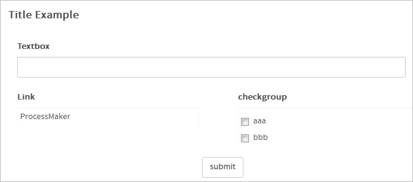
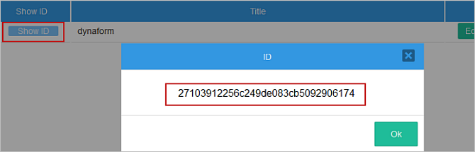
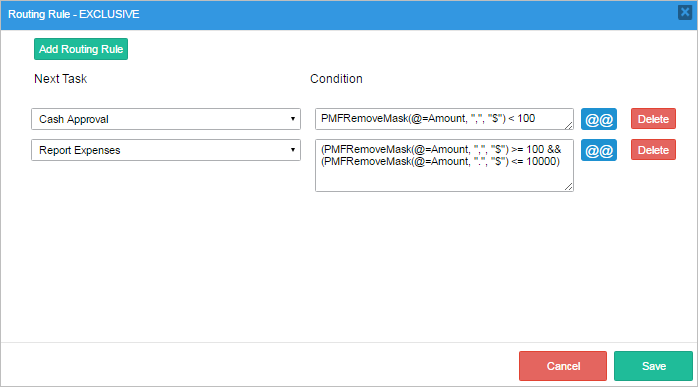
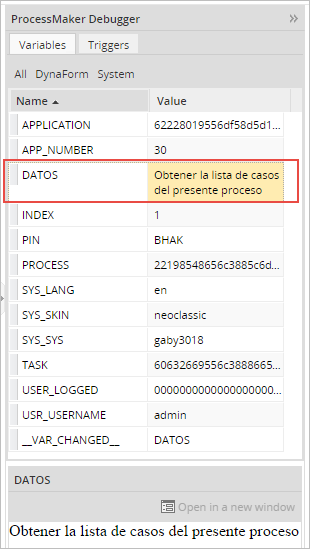
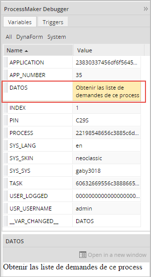

- Overview
- Case Functions
- PMFCancelCase()
- PMFCaseLink()
- Different uses of Direct Case Link
- Example in a Trigger
- Open the case using the URL
- Permissions and Considerations
- PMFCaseList()
- PMFDeleteCase()
- PMFNewCase()
- PMFNewCaseImpersonate()
- PMFPauseCase()
- PMFSendVariables()
- PMFTaskCase()
- PMFUnCancelCase()
- PMFUnpauseCase()
- setCaseTrackerCode()
- Case Notes Functions
- Case Routing Functions
- Database Functions
- Date Functions
- Document Functions
- PMFAddInputDocument()
- PMFAssociateUploadedFilesWithInputFile()
- PMFCopyDocumentCase()
- PMFGenerateOutputDocument()
- Dynaform and Field Functions
- Email Functions
- getEmailConfiguration()
- PMFAddAttachmentToArray()
- PMFGetUserEmailAddress()
- PMFSendMessage()
- PMFSendMessageToGroup()
- Grid Functions
- Group Functions
- PMFAssignUserToGroup()
- PMFGetGroupName()
- PMFGetGroupUID()
- PMFGetGroupUsers()
- PMFGroupList()
- PMFRemoveUsersFromGroup()
- Process Functions
- String Functions
- Task Functions
- PMFAddUserGroupToTask()
- PMFGetTaskName()
- PMFGetTaskUID()
- PMFRemoveUserGroupFromTask()
- PMFTaskList()
- PMFTasksListByProcessId()
- Unique ID Functions
- User Functions
Overview
ProcessMaker has made a number of its PHP functions available to be used in triggers and conditions. These functions are defined in the file workflow/engine/classes/class.pmFunctions.php. Many of these functions are wrappers for internal class methods used by ProcessMaker or in Gulliver, which is the development framework used by ProcessMaker.
ProcessMaker Functions are generally named PMF...() and are designed to work with ProcessMaker from inside a trigger. These functions can be executed by user who is currently logged-in and running the case, as long as they have the correct permissions. If it is necessary to execute these functions as a different user, use the corresponding WSDL Web Services or REST endpoints.
Case Functions
PMFCancelCase()
PMFCancelCase() cancels a specified case in "TO DO" status. A canceled case can be reviewed in the Participated tray. Use PMFDeleteCase for cases in "DRAFT" status that cannot be canceled.
Parameters:
- string caseUID: The unique ID of the case, which can be found in the following ways:
- Use the
@@APPLICATIONsystem variable to get the unique ID of the current case. - Use the PMFCaseList(), WSCaseList() or the caseList() web service.
- Use the
- int delIndex: The delegation index of the current task in the case. For the current case, use the
@%INDEXsystem variable. - string userUID: The unique ID of the user who will cancel the case. For the currently logged-in user, use the
@@USER_LOGGEDsystem variable.
Return value:
- Returns 1 if the case was successfully canceled.
- Returns 0 if the case is in "DRAFT" status.
Example:
The following trigger code cancels the current case and uses the die() function to prevent the next step from being executed:
if (@@return) {
print "Case cancelled."
}
die;
Warning: Take into consideration that when using the PMFCancelCase function in parallel tasks, ONLY the thread of the current parallel task will be canceled. The rest of parallel tasks will remain open. This is a known issue that will be fixed in upcoming versions of ProcessMaker.
PMFCaseLink()
This new ProcessMaker feature makes possible to open a case inside ProcessMaker using only a link. This link can be used in notifications, templates, output documents, links inside Dynaforms or can be defined or stored in variables. The Direct Case Link remains unique regardless of the case status. This means that the link generated will respect the case status and open the case in the corresponding task.
PMFCaseLink function creates a case direct link.
Parameters:
- string caseUID: (Required) The unique ID of the case, which can be found in the following ways:
- Use the
@@APPLICATIONsystem variable to get the unique ID of the current case. - Use PMFCaseList(), WSCaseList(), or the caseList() web service.
- Use the
- string workspace: (Optional) The workspace. Note that if not set the current workspace where the case is executed is selected.
- string language: (Optional) The language to display the case. If not set, each user will open the case in the default language configured in his/her own profile. If the user didn't define a default language or in the community edition, the default system language is selected (Admin/settings/system/default language).
- string skin: (Optional) The skin name. Note that if not set the default skin is selected (neoclassic).
Return Value
Returns a string if the case link was generated succesfully. Returns false if an error ocurred.
Example:
The returned value of this example will be:
Different uses of Direct Case Link
The URL can be stored in a string, it can be used in different cases:
- Emails
- Templates
- Output Documents
- Variables (Defined or stored)
Example in a Trigger
In order to do the example follow these steps:
1. Create a new string variable named app_Link to store the link.

2. Create a trigger named Case Link and place the following code:

3. Place the trigger before Dynaform in the first step of the first task to generate the Direct Case Link.

4. Create a notification on the First task, to notify the next assigned user(s) by email.

5. When running a new case, after the first task is routed, an email containing the Direct Case Link will be send to all the users assigned to the next task.

Open the case using the URL
Open the case in your favorite browser using the generated Direct Case Link. This link opens the ProcessMaker interface including the main menu and the cases list menu (inbox, draft, etc.). The defined case will be displayed in the central area.

Permissions and Considerations
ProcessMaker Active Session
To open the case of the link, the user needs to be logged in into ProcessMaker. Therefore, take into consideration the following:
- Case opened in a new tab: If the link is open inside a browser with an active ProcessMaker session, then the case will be opened in a new tab. An active session means that the user logged in using the ProcessMaker login screen or the configured SSO.
- The user is not logged in: If the user is not logged in into Processmaker, then the Processmaker login page or the Single Sign On Login page is displayed.

Once logged in, ProcessMaker will be automatically redirected to the case.
Case Status and User Permissions
Since the same Direct Case Link can be used to open the case for the current assigned user, the supervisor or another user that participated in the case. ProcessMaker is going to display the case information depending on the user's permissions and case status. The possible situations opening the case are describe as follows:
- The user is not participating in the case: If the user doesn't participate in the case and don’t have specific process permissions, the generic case information is displayed.

- The user participated in the case and is assigned to a task: If the user is currently assigned to a task, then is automatically redirected to the specific task of the case.
- The user participated in the case but is not currently assigned to the current task/step:
If the user participates in the case and is not assigned to a task or the case is completed, paused, or deleted then the summary form of the case is displayed.

- The user participated in the case and is assigned to more than one task: If the user has more than one task of the same case in his inbox, the inbox cases list is display, and the inbox is filtered by the case number, in orden to show all the parallel tasks assigned to the user in the same case and the user must select the task to open.

Other considerations
Take into consideration the following additional considerations:
- A Direct Case Link can be generated with different language, skin or even workspace to the one in which was generated.
- If the language parameter was set, the user that receives the Direct Case Link, will open ProcessMaker in the language defined in the link regardless of his profile language.
PMFCaseList()
PMFCaseList() returns a list of the pending cases (i.e., cases that have a status of "To Do" or "Draft") belonging to a specified user. Note that the specified user must be designated to work on the current task of these cases.
Parameters:
- string userUID: The unique ID of a user who is assigned to work on the cases.
Return Value:
A list of cases, with the following structure:
Where:
- string guid: The unique ID of a case.
- string name: The label of a case.
- string status: The status of a case.
- int delIndex: The current delegation index.
Example:
PMFDeleteCase()
PMFDeleteCase() deletes a specified case. Note that the case will be deleted completely and it will not appear in the Participated tray.
To cancel a case use PMFCancelCase() instead of PMFDeleteCase().
Parameters:
- string caseUID: The unique ID of a case. For the current case use the system variable
@@APPLICATION. Other case UIDs can be found with PMFCaseList(), WSCaseList(), caseList() or by querying the field wf_<WORKSPACE>.APPLICATION.APP_UID.
Return value:
- Returns 1 if the case was successfully deleted, otherwise returns 0 if an error occurred.
Example:
This example uses header() with "Location: casesListExtJsRedirector" to go back to the list of cases in the Inbox after deleting the case.
PMFNewCase()
PMFNewCase() creates a new case starting in the specified task.
Parameters:
- string processUID: The unique ID of the process, which can be found in the following ways:
- Use the
@@PROCESSsystem variable to get the unique ID of the current process. - Use the PMFProcessList() function or processList() web service.
- Query the wf_<WORKSPACE>.PROCESS.PRO_UID field in the database or use a query like:
SELECT PRO_UID FROM PROCESS WHERE PRO_TITLE = 'Expense Report Process'
- Use the
- string userUID: The unique ID of the user, which can be found in the following ways:
- Use the @@USER_LOGGED system variable to get the unique ID of the user currently logged in.
- Use the PMFUserList() function or userList() web service.
- Query the wf_<WORKSPACE>.USERS.USR_UID field in the database.
- string taskUID: The unique ID of the task, which can be found in the following ways:
- Use the
@@TASKsystem variable to get the unique ID of the current task. - Use the PMFTaskList() function or taskList() web service.
- Query the wf_<WORKSPACE>.TASK.TAS_UID field in the database or get the starting task of the current process with the following query:
executeQuery("SELECT TAS_UID FROM TASK WHERE PRO_UID='" . @@PROCESS . "' AND TAS_START='TRUE'");
- Use the
- array variables: An associative array of the variables that will be sent to the case. The keys are the variable names and the values are the values of the case variables. If the case variable is a grid, then set the value to an associative array of associative arrays. See Example 3 below. If no variables are needed, then set to an empty array: array()
Return Value:
If an error occurred, it returns zero. Otherwise, it returns a string with the case UID of the new case.
Note: The status of the new case will automatically be set to "DRAFT". To change the status so the new case will appear in the user's Inbox (instead of the Draft box), see Create new case and change its status.
Example 1:
Create a new case of the current process, designating the current user to work on the new case. The starting task ID is hard coded in the trigger code and no case variables are set in the new case. After creating the new case, call Cases::LoadCase() to find out the new case number and the name of its assigned user. Then, call the G::SendMessageText() function to display a message in the next screen about the new case.
$newCaseUID = PMFNewCase(@@PROCESS, @@USER_LOGGED, $taskUID, array());
//if a new case was created, display a message in the next screen:
if ($newCaseUID) {
$c = new Cases();
$aCaseInfo = $c->LoadCase($newCaseUID, 1);
$msg = 'New Case #' . $aCaseInfo['APP_NUMBER'] . ' is assigned to ' . $aCaseInfo["CURRENT_USER"];
$g = new G();
$g->SendMessageText($msg, 'INFO');
}
else {
$msg = "Unable to create new case." . isset(@@__ERROR__) ? @@__ERROR__ : '';
$g = new G();
$g->SendMessageText($msg, 'ERROR');
}
Example 2:
Look up the ID of a process named "Expense Report Process" and its starting task in the database. Then, call the Derivation::getAllUsersFromAnyTask() method to get an array of the users who are assigned to that starting task. Use the rand() function to randomly choose one to assign to the new case. Set the values of case variables named "Model", "Price" and "OrderDate" in the new case.
$result = executeQuery("SELECT PRO_UID FROM PROCESS WHERE PRO_TITLE = 'Expense Report Process'");
$processUID = $result[1]['PRO_UID'];
//Look up the UID of the starting task for the process:
$result = executeQuery("SELECT TAS_UID FROM TASK WHERE PRO_UID='$processUID' AND TAS_START='TRUE'");
$taskUID = $result[1]['TAS_UID'];
//Randomly choose a user from the list of assigned users for the starting task:
$d = new Derivation();
$aUsers = $d->getAllUsersFromAnyTask($taskUID);
if (count($aUsers) == 0) {
throw new Exception("There are no assigned users for task $taskUID");
}
$noUser = rand(0, count($aUsers)-1);
$userUID = $aUsers[$noUser];
//Create an associative array of case variables named "Model", "Price" and "OrderDate":
$aData = array('Model' => 'Acme Coyote Trap', 'Price' => 29.99, 'OrderDate' => '2010-12-31');
PMFNewCase($processUID, $userUID, $taskUID, $aData);
Example 3:
Start a new case, setting a grid case variable named "clientsGrid" that has the fields "firstName", "lastName" and "telephone" and has 3 rows of data:
$aGrid = array(
"1" => array("firstName" => "Greg", "lastName" => "Brown", "telephone" = "471.826-4329"),
"2" => array("firstName" => "Anne", "lastName" => "Smith", "telephone" = "913.626-9518"),
"3" => array("firstName" => "Sally", "lastName" => "Slim", "telephone" = "765.652-8608")
);
$newCaseId = PMFNewCase(@@PROCESS, @@USER_LOGGED, $taskUID, array("clientsGrid" => $aGrid));
PMFNewCaseImpersonate()
PMFNewCaseImpersonate() creates a new case. It is similar to PMFNewCase(), but it impersonates the session variables, so it is more robust than PMFNewCase().
Parameters:
- string processUID: The unique ID of the process.
- string userUID: The unique ID of the user.
- array variables: An associative array of the variables that will be sent to the case. The array keys are the variable names and the array values are the values of the case variables. See PMFSendVariables() for the format of different variables in ProcessMaker. If no variables are needed, then set to an empty array:
array() - string taskUID: Optional. The unique ID of the task where the case will start. If the process only has one starting task or the user is only assigned to one of the starting tasks, then it is not necessary to specify the task.
Return Value:
Returns 1 if new case was created successfully; otherwise, returns 0 if an error occurred.
Note: The status of the new case will automatically be set to "DRAFT". To change the status so the new case will appear in the user's Inbox (instead of the Draft box), see Create new case and change its status.
Note: It is possible to send file variables to new cases, but the files themselves will not be available in the new case. If users working on the new case need to access the files, then either send the files to the new case with the PMFCopyDocumentCase() function or upload the files to the new case using the POST .../services/upload or POST .../cases/{app_uid}/input-document endpoints.
Example:
The following example creates a new case in the same process and sends variables to the new case. It is possible that the user skipped a Dynaform and a variable was not set in the case, so the isset() function is used to check whether the case variable exists, before using it.
PMFPauseCase()
PMFPauseCase() pauses a specified case.
Parameters:
- string caseUID: The unique ID of the case, which can be found in the following ways:
- Use the
@@APPLICATIONsystem variable to get the unique ID of the current case. - Use PMFCaseList(), WSCaseList(), or the caseList() web service.
- Use the
- int delIndex: The delegation index of the current task in the case. For the current case, use the system variable
@%INDEX. - string userUID: The unique ID of the user who will pause the case. Note that PMFPauseCase() allows any user to pause any case. The user's unique ID can be found in the following ways:
- Get the UID of the currently logged-in user with the
@@USER_LOGGEDsystem variable or$_SESSION['USER_LOGGED']. - Use the PMFUserList() or WSUserList() functions, or the userList() web service.
- Query the wf_<WORKSPACE>.USERS.USR_UID field in the database with executeQuery().
- Get the UID of the currently logged-in user with the
- string unpauseDate: Optional. The datetime in the format
"YYYY-MM-DD HH:MM:SS"indicates when the case will be unpaused. If set to NULL or "" (empty string), then the case will be paused indefinitely, until a user manually unpauses it. If the hours, minutes or seconds aren't included in the datetime, then they automatically set to zero. Note that the case will be automatically unpaused at the configured datetime by the cron.php script, so the server needs to periodically execute this script. Ex:"2015-12-31 17:59:59"or"2017-01-08"
Return Value:
Returns 1 if the case is paused successfully; otherwise, returns 0 if an error occurred.
Example:
Pause the current case. Then, call header("Location: URL") to redirect the web browser to the Inbox and call die() to stop the case from trying to advance to the next step.
Note 1: If calling die() in a trigger that is executed immediately after a Dynaform, it will prevent the form's data from being saved. Therefore, it is recommended to set this trigger to execute before the next step in the task (or before assignment if the last step in the task), so that the form's data will be saved.
Note 2: A case that is currently being executed cannot be paused by using the PMFPauseCase() function inside a script task.
Note 3: If the $caseUID is set to the ID of the current case and the $delIndex is set to the delegation index of the current task, then PMFPauseCase() will call die() to prevent the current case from advancing. This means that any code after calling PMFPauseCase() will not be executed.
PMFSendVariables()
PMFSendVariables() sends an array of case variables to a specified case in "TO_DO" status. These variables are stored in the wf_<WORKSPACE>.APPLICATION.APP_DATA field and can be displayed by any subsequent Dynaform that has field controls associated with variables of the same name.
Parameters:
- string caseUID: The unique ID of the case that will receive the variable. Note that the case ID changes with each new task in the process. To send variables to the current case, use the system variable
@@APPLICATION. - array variables: An associative array that will hold the case variables to sent to the case. The keys are the case variable names and the values are the values of the case variables.
Return Value:
Returns 1 if the variables were sent successfully to the case; otherwise, returns 0 if an error occurred.
Example 1:
Send variables from a subprocess case to its parent case. The executeQuery() function is used to look up the case ID of the parent case in the SUB_APPLICATION table in the database.
$aCase = executeQuery("SELECT APP_PARENT FROM SUB_APPLICATION WHERE APP_UID='$caseId'");
if (is_array($aCase) and count($aCase) > 0) {
$aData = array(
'Model' => 'Acme Blender #2',
'Price' => 27.40,
'OrderDate' => '2010-12-31'
);
PMFSendVariables($aCase[1]['APP_PARENT'], $aData);
}
Example 2:
This example send variables from the current case (which is a parent case) to all its subprocess cases. It uses the Cases::LoadCase() function to get all the variables for the current case which are stored in the ['APP_DATA'] array key. It then unsets the system variables in the array and sends all those variables to a new case. Note that Cases::LoadCase() gets the case variables which are stored in the database, so this code should not be used in a trigger immediately after a Dynaform, because the variables from the Dynaform have not yet been saved at that point.
//get the current case variables:
$c = new Cases();
$aCase = $c->LoadCase($caseId, @%INDEX);
$aVars = $aCase['APP_DATA'];
//unset the system variables:
$aSystemVars = array('SYS_SYS', 'SYS_LANG', 'SYS_SKIN', 'PROCESS', 'TASK', 'APPLICATION',
'INDEX', 'APP_NUMBER', 'USER_LOGGED', 'USR_USERNAME', 'PIN');
foreach ($aSystemVars as $var) {
unset($aVars[$var]);
}
//lookup the subprocess cases in the SUB_APPLICATION table:
$aSubcases = executeQuery("SELECT APP_UID FROM SUB_APPLICATION WHERE APP_PARENT='$caseId'");
foreach ($aSubcases as $aSubcase) {
PMFSendVariables($aSubcase['APP_UID'], $aVars);
}
Example 3:
This example shows how to send different types of variables to a case. Note that it is not necessary to send the label variables (@@variable_label) for textboxes, textareas and hidden controls, because they have the same value as the normal variable (@@variable). Grids don't have a label variable.
File controls have a label variable which holds the filename of the uploaded file in a JSON string. In version 3.0.1.18 and later, file controls also have a normal variable which holds the ID for the uploaded file in a JSON string, but this variable is not created if no file is uploaded, so it is necessary to use isset() to check whether the variable exists before trying to pass it to another case. With the file's ID it is possible to look up information about the file using the AppDocument::Load() function or use executeQuery() to do a database search in the APP_DOCUMENT table. However, if users working in the new case need to access the file, then either send the files to the new case with the PMFCopyDocumentCase() function or upload the files to the new case using the POST .../services/upload or POST .../cases/{app_uid}/input-document endpoints.
'orderNo' => 'FL-3478', //string
'partId' => @@partOrdered, //string variable for textbox, textarea, dropdown, suggest, radio or hidden
'quantity' => 24, //integer
'daysToShip' => @%daysToShip, //integer variable for textbox, textarea, dropdown, radio or hidden
'taxRate' => 0.055, //float (real number)
'price' => @#partPrice, //float variable for textbox, textarea, dropdown, radio or hidden
'orderDate' => '2017-10-30 18:03:50',//datetime in "YYYY-MM-DD HH:MM:SS" format
'orderDate_label'=> 'Oct 10, 2017', //datetime according to control's format property
'shipDate' => @@shipDate, //variable for datetime control
'shipDate_label' => @@shipDate_label, //label variable for datetime control
'rushOrder' => array('1'), //checkbox values set by options. By default: array('1') or array('0')
'rushOrder_label'=> 'true', //checkbox label set by options. By default: 'true' or 'false'
'shipByAir' => @=shipByAir, //variable for checkbox
'shipByAir_label'=> @@shipByAir_label, //label variable for checkbox
'partType' => 'engine', //value of selected option in dropdown,suggest,radio. Values set by options
'partType_label' => 'Engine component', //label of selected option in dropdown,suggest,radio. Labels set by options
'shipType' => @@shipType, //variable for dropdown,suggest,radio (can also be @%variable or @#variable)
'shipType_label' => @@shipType, //label variable for dropdown,suggest,radio.
'rushOrder' => array('1'), //checkbox values set by options property. By default: array('1') or array('0')
'rushOrder_label'=> 'true', //checkbox labels set by options property. By default: 'true' or 'false'
'shipByAir' => @=shipByAir, //variable for checkbox
'shipByAir_label'=> @@shipByAir_label, //label variable for checkbox
'services' => array('cleaning','accounting'), //array of selected options in checkgroup
'services_label' => '["Janitorial","Accounting"]', //JSON string of selected labels in an array for checkgroup
'classes' => @=classes, //variable for checkgroup
'classes_label' => @@classes_label //label variable for checkgroup
'specFile' => '["2157955725880e1bb747882058967964"]', //JSON string with ID of AppDocument in an array. Variable only
//created if file selected and only in version 3.0.1.18 and later.
'specFile_label' => '["FL-3478_Specs.pdf"]', //JSON string with filename in an array
'clientDoc' => isset(@@clientDoc) ? @@clientDoc : '[]',//variable for file control, not created if no file selected
'clientDoc_label'=> @@clientDoc_label, //label variable for file control
'contractFiles' => array( //multiple file control with array for each selected file
array(
'appDocUid' => '5027371035880e1a3a0de93013055939', //ID of AppDocument for selected file
'name' => 'contract17Mar2014.docx', //filename of selected file
'version' => '1' //version number of selected file (always '1')
),
array(
'appDocUid' => '1478887215880e1a3c07a36097363616',
'name' => 'contract03Nov2017.odt',
'version' => '1'
)
),
'receiptFiles' => @=receiptFiles, //variable for multiple file control
'clientsList' => array( //array of arrays for each row in grid
array( //first row, keys are the IDs of fields in grid
'company' => 'Acme, Inc.', //textbox
'address' => "234 Main St.\nPortland, OR 23876", //textarea
'canShip' => '1', //checkbox values of '1' or '0' (not inside array)
'canShip_label' => 'true', //checkbox labels of 'true' or 'false' by default
'service' => 'landscaping', //dropdown: selected value
'service_label' => 'Lawn Service', //dropdown: selected label
'endDate' => '2018-06-01 00:00:00', //datetime in "YYYY-MM-DD HH:MM:SS" format
'endDate_label' => 'June 1, 2018' //datetime label
'specFile_label'=> '["AcmeSpecs.pdf"]' //file: JSON string of filename in array
//Note that ID of AppDocument for file is not in grid
),
array( //second row
'company' => "Serious Eat'n",
'address' => "275 Oak Av.\nMiami, FL 653420",
'canShip' => '0',
'canShip_label' => 'false',
'service' => 'catering',
'service_label' => 'Food Service',
'endDate' => '2020-12-31 23:59:59',
'endDate_label' => 'December 31, 2020'
'specFile_label'=> '["food_selection.pdf"]'
)
),
//Variables for files in grid in version 3.0.1.18 and later and only created if file is selected in row:
'clientsList_1_specFile' => '["9652344485880e1bbb826e5060565812"]',//File in row 1
'clientsList_1_specFile_label' => '["AcmeSpecs.pdf"]', //Filename in row 1
'clientsList_2_specFile' => '["2157955725880e1bb747882058967964"]',//File in row 2
'clientsList_2_specFile_label' => '["food_selection.pdf"]', //Filename in row 2
'contractsGrid' => @=contractsGrid //variable for grid
);
PMFSendVariables('2648391115880de3d598d26021145506', $aData);
PMFTaskCase()
PMFTaskCase() returns all the tasks that have open delegations in the specified case.
Parameters:
- string caseUID: The unique ID of a case.
Return Value:
A list of tasks, with the following structure:
Where:
- string guid: The unique ID of a task.
- string name: The name of a task.
Example:
PMFUnCancelCase()
PMFUnCancelCase() un-cancels a specified case. A case cancelled can be reviewed in the Inbox tray. Take into consideration that only roles with the PM_UNCANCELCASE permission will be able to uncancel a case.
Parameters:
- string caseUID: The unique ID of the case, which can be found in the following ways:
- Use the
@@APPLICATIONsystem variable to get the unique ID of the current case. - Use the PMFCaseList(), WSCaseList() or the caseList() web service.
- Use the
- string userUID: The unique ID of the user who will receive the case when uncancelling the case. For the currently logged-in user, use the
@@USER_LOGGEDsystem variable.
Return value:
- Returns 1 if the case was successfully uncancelled, otherwise returns 0 if an error occurred. If the user does not have the PM_UNCANCELCASE permission assigned, it will return 0.
Example:
The following trigger code uncancels the current case and uses the die() function to prevent the next step from being executed:
PMFUnpauseCase()
PMFunpauseCase() unpauses a specified case.
Parameters:
- string caseUID: The unique ID of the case, which can be found in the following ways:
- Use the
@@APPLICATIONsystem variable to get the unique ID of the current case. - Use the caseList() web service.
- Use the
- string delIndex: The delegation index of the current task in the case. For the current case, use the system variable
@%INDEX. - string userUID: The unique ID of the user who will unpause the case, which can be found in the following ways:
- Get the UID of the currently logged-in user with the
@@USER_LOGGEDsystem variable or $_SESSION['USER_LOGGED']. - Use the PMFUserList() or WSUserList() functions, or the userList() web service.
- Query the wf_<WORKSPACE>.USERS.USR_UID field in the database with executeQuery().
- Get the UID of the currently logged-in user with the
Return Value:
Returns 1 if the case is unpaused successfully; otherwise, returns 0 if an error occurred.
setCaseTrackerCode()
setCaseTrackerCode() sets the code and PIN of a case, which are used when an unregistered user logs into the Case Tracker to view the details of a particular case. By default, the code for a case is its case number and its PIN (public identification number) is a semi-random string of 4 characters (numbers and letters) autogenerated by ProcessMaker; however, setCaseTrackerCode() can set the case code and PIN to any desired values.
Parameters:
- string caseUID: The unique ID of a case. For the current case use the system variable
@@APPLICATION. Other case UIDs can be found with PMFCaseList(), WSCaseList(), caseList() or by querying the wf_<WORKSPACE>.APPLICATION.APP_UID field in the database. - string code: The new code of a case up to 100 characters long, which will be stored in the wf_<WORKSPACE>.APPLICATION.APP_PROC_CODE field in the database. To keep the case code as the case number, set it to @@APP_NUMBER for the case number of the current case or for another case look up its case number in the wf_<WORKSPACE>.APPLICATION.APP_NUMBER field in the database.
- string PIN: Optional. The new PIN (personal identification number) in UPPERCASE of a case, which will be stored in the wf_<WORKSPACE>.APPLICATION.APP_PIN field as an MD5 hash and will be available in the system variable
@@PINfor the current case. If not included or set to''(an empty string), then the PIN will not be changed. Note that if the PIN is not in UPPERCASE, then it will not be possible to login to the Case Tracker.
Return Value:
If successful, returns one; otherwise returns zero or an error number.
Example:
Case Notes Functions
PMFAddCaseNote()
PMFAddCaseNote() adds a case note to a specified case.
Parameters:
- string caseUID: (Required) The unique ID of the case, which can be found in the following ways:
- Use the
@@APPLICATIONsystem variable to get the unique ID of the current case. - Use the PMFCaseList(), WSCaseList() or the caseList() web service.
- Use the
- string processUID: (Required) The unique ID of the process, which can be found in the following ways:
- For the current process, use the
@@PROCESSsystem variable. - Use executeQuery() to look up the unique ID in the wf_<WORKSPACE>.PROCESS.PRO_UID field.
- For the current process, use the
- string taskUID: (Required) The unique ID of the task, which can be found in the following ways:
- Use the
@@TASKsystem variable to get the unique ID of the current task. - Use the PMFTaskList() function or taskList() web service.
- Query the wf_<WORKSPACE>.TASK.TAS_UID field in the database or get the starting task of the current process with the following query:
- Use the
-
- executeQuery("SELECT TAS_UID FROM TASK WHERE PRO_UID='" . @@PROCESS . "' AND TAS_START='TRUE'")
$userUID:(Required) The unique ID of the user who will add the case note. Note that it is NOT possible to include the UID of more than one user.$note:(Required) Note of the case.$sendMail:(Optional) If set to 1, will send an email to all participants in the case.
Return Value:
Returns 1 if the note has been successfully added to the case, otherwise returns 0 if an error has occurred.
Example:
Note: It is possible to use case or system variables in the text of the case note. The following example inserts the resolution number, which is a value from a Dynaform field, into the text of the case note:
PMFGetCaseNotes()
PMFGetCaseNotes() returns a list of the case notes posted to a specified case.
Parameters:
- string application: The unique ID of a case, which can be obtained in the following ways:
- For the current case, use the system variable
@@APPLICATION. - Use PMFCaseList(), WSCaseList() or the caseList() web service.
- Use executeQuery() to query the wf_<WORKSPACE>.APPLICATION.APP_UID or wf_<WORKSPACE>.APP_DELEGATION.APP_UID fields in the database
- For the current case, use the system variable
- string type: Optional parameter. Set to
'array'if the result will be displayed in a grid. Set to'string'to return a string, which can be displayed in a textarea field. The default value is'array'. - string userUID: Optional parameter. To return the case notes posted by a single user, set to the unique ID of that user. If no user ID is specified, then it will return the case notes from all users. For the currently logged-in user, use the
@@USER_LOGGEDsystem variable.Note: It's not possible to define more than one user ID in the last parameter.
Return Value:
If the type is set to 'array', then this function returns an array of associative arrays with the following structure:
YYYY-MM-DD HH:MM:SS format.
string ['NOTE_CONTENT']: The content of the case note.
string ['NOTE_TYPE']: The type of the case note.
string ['NOTE_AVAILABILITY']: The type of availability of the case note.
string ['NOTE_RECIPIENTS']: The users who got the note by notification.
string ['USR_USERNAME']: The username of the user who created the case note.
)
...
Note that the counting of the array starts from 1, not 0.
If the $type is set to 'string', then this function returns a string that includes the name and username of the user who posted the case note, the content of the case note, and the date-time when posted:
NOTE_CONTENT is in HTML format so a string like "¡güéro!" becomes "¡güéro!". This text can be displayed without problem inside a panel, but to display this text correctly inside an input field, use the html_entities_decode() function to convert it to the UTF-8 character set. See the examples below.Showing Case Notes in a Grid
Create a Dynaform and inside it add a grid. When dropping the Grid element, create a new variable named gridPMFunction that is associated to the grid.

Add the following controls inside the grid:
- A Textbox with id:
FULL_NAME. - A Textbox with id:
USR_USERNAME. - A Textarea with id:
NOTE_CONTENT - A Datetime control with id:
NOTE_DATE

Save the changes and close the Dynaform. Then, create the following custom trigger:
for ($i = 1; $i <= count(@=gridPMFunction); $i++) {
@=gridPMFunction[$i]['NOTE_CONTENT'] = html_entity_decode(@=gridPMFunction[$i]['NOTE_CONTENT'],
ENT_QUOTES, 'UTF-8');
}
In this example, the case notes from all users in the current case are returned in an array which is assigned to the @=gridPMFunction variable which is associated with a grid in the subsequent Dynaform. Note that the last parameter of the PMFGetCaseNotes() function is an empty string, so it will return the case notes created by all users.
Then, the code loops through each element in the @=gridPMFunction array and calls html_entity_decode() to converts the text in the ['NOTE_CONTENT'] elements from HTML to UTF-8 text.
Assign the above trigger to be executed before the Dynaform and the results will be shown in the grid:

In this example, the trigger was executed in the process's second task, so all case notes added in both the first and second tasks will be displayed in the grid.
Showing Case Notes in a Textbox
Create a Dynaform that has a Textarea control with a variable called textAreaPMFunction.

Then create a trigger as follows:
Where:
P@@textAreaPMFunction: name of the textarea added to the Dynaform and where the results will be shown.@@APPLICATION: UID of the current process.string: the results. In the example, the results will be shown in a textarea.
The last parameter is empty, so it will display all the case notes created by the users.
Assign the trigger before the Dynaform. The result will be:

Case Routing Functions
jumping()
jumping() routes a case to the next task in the process (or terminates the case if at the last task in the process) and then displays the case list.
Parameters:
- string caseUID: The unique ID of the case to be routed. For the current case, use the system variable
@@APPLICATION. For other cases, use PMFCaseList() to obtain the case UID, or do a database query to look up the case's unique ID in the field wf_<WORKSPACE>.APPLICATION.APP_UID. Note that the case's UID changes with each new task. - int delegation: The delegation index of the task to be routed. Counting starts from 1. For the current case, use the system variable
@%INDEX. For other cases, use PMFCase() to obtain the delegation index, or do a database search in the field wf_<WORKSPACE>.APP_DELEGATION.DEL_INDEX.
Return Value:
None.
Example:
PMFDerivateCase()
| Warning: Please, take into consideration that this function is NOT supported in ProcessMaker Mobile. It will be available in future versions. |
PMFDerivateCase() routes a case to the next task in the process.
Parameters:
- string caseUID: The unique ID of the case to be routed, which can be found with PMFCaseList() or by querying the field wf_<WORKSPACE>.APPLICATION.APP_UID. The case UID of the current case is stored in the system variable
@@APPLICATION. - int delegation: The delegation index of the task to be routed. The delegation index of the current case is stored in the system variable
@%INDEX. Note that the delegation index changes with each new task in the case, so look up the index before calling this function. - boolean executeTriggersBeforeAssigment: Optional parameter. By default, it is set as
false. If set totrue, any triggers that are set to be fired before the case is assigned to the next user will be fired before routing the case. It is not recommended to set the value to true, because then the function will generate an infinite loop. If this value is set tofalsethe trigger will be executed before assignment. - string userUID: Optional parameter. The unique ID of the user who is assigned to the task indicated by the
delIndex number, which should be an open task. If not included or set tonull, then it will be set to the unique ID of the current logged-in user.
Return Value:
Returns 1 if the new case was routed successfully; otherwise, returns 0 if an error occurred.
Note 1: If this function is called for the current task when running a case, then the case will be routed twice--once by PMFDerivateCase() and the second time by the interface running the case. To work around this problem, call the die() function after PMFDerivateCase() to stop the processing and prevent the second routing. However, if die() is called after a Dynaform step, then it will stop the Dynaform data from getting saved to the database. In this case, use PMFSendVariables() to save the data to the database before calling PMFDerivateCase and die(). See the example below.
Note 2: This function only works if the currently logged in user is assigned to the task indicated by the delegation parameter. If it is necessary to route a task that is assigned to another user, login as that user with web services and use routeCase() instead of PMFDerivateCase(). See this code example for routing past the next task in the current case.
Note 3: The PMFDerivateCase() function can only route tasks that exist in the wf_<WORKSPACE>.APP_DELEGATION table and whose status is 'OPEN'. In other words, this function can't be called on past tasks that are already closed and future tasks that don't yet exist. To route the next task in the case, which doesn't yet exist, see Skipping the Next Task in a Case.
Example 1:
Route the current case to the next task in the process and redirect the web browser back to Home > Inbox to see the case list:
Example 2:
To route to a case immediately after a Dynaform step, the data from the Dynaform variables needs to be stored in the database with PMFSendVariables() before calling die(). For example, the Dynaform contains the variables "firstName", "lastName", "address" and "telephone", which need to be saved.
Note: If the trigger is set before the next step (or before assignment if the last step in the task), then it is not necessary to call PMFSendVariables() because the variables from the Dynaform will have already been saved to the database.
Example 3:
To avoid having to click on the Continue button at the end of a task, create the following trigger, which is set before assignment:
If the next task is assigned to the same user as the current task, then it can be opened directly without going to the Inbox. Create the following trigger and set it to execute after routing:
PMFGetNextAssignedUser()
PMFGetNextAssignedUser() returns an array of information about the user designated (i.e., chosen out of the assignment pool) to work on the next task in a specified case.
Parameters:
- string application: The unique ID of a case. For the current case, use the system variable
@@APPLICATION. For other cases, use the PMFCaseList() function or caseList() web service. Alternatively, query the wf_<WORKSPACE>.APPLICATION.APP_UID or wf_<WORKSPACE>.APP_DELEGATION.APP_UID fields in the database - string task: The unique ID of the task, which can be found by right clicking on the task in the process map and selecting Properties in the context menu. It can also be found with the taskList() web service or by querying the wf_<WORKSPACE>.TASK.TAS_UID field in the database.
- int delIndex: Optional. The delegation index of the current task in the case. It is only necessary to set this parameter if calling this function in a script task or if not calling this function for the current case.
- string userUID: Optional. The unique ID of the user assigned to the case. It is only necessary to set this parameter if calling this function in a script task or if not calling this function for the current case.
Return Value:
An associative array of information about the user to be designated to work on the next task in the specified case, with the following elements:
- string 'USR_UID': The unique ID of the next assigned user.
- string 'USR_USERNAME': The username of the next assigned user.
- string 'USR_FIRSTNAME': The first name of the next assigned user.
- string 'USR_LASTNAME': The last name of the next assigned user.
- string 'USR_EMAIL': The email address of the next assigned user.
Warning: This function only works reliably if called in certain circumstances; otherwise, it is recommended to get the next designated user by querying the wf_<WORKSPACE>.APP_DELEGATION.USR_UID field in the database in a trigger fired after routing. See this email example and this routing example.
This function should only be used when the next task in the process has cyclical assignment, since this function checks who was the last user designated to work on the next task (which is stored in the wf_<WORKSPACE>.TASK.TAS_LAST_ASSIGNED field in the database) and then returns the next user in the list. That next user will be assigned to the next case that routes to the task; however, the next case may not be the case specified by the $application parameter. Therefore, it is recommended to use this function in processes that do NOT have multiple cases being executed at the same time. If the process might execute multiple simultaneous cases, then only call this function in a trigger that fires before assignment.
Note: If this function is not called for the next task in the specified case, meaning that the $task is not the next task in the case, then the following error message will be displayed:
Fatal error: Call to a member function getTaskUid() on null in /opt/processmaker/workflow/engine/classes/class.case.php on line 2351
Example 1:
Send an email to the user designated to the next task in the current case, warning him/her about an upcoming case to work on. Send the first and last names of the next user as the variables @#firstname and @#lastname to insert into the email template:
$aUser = PMFGetNextAssignedUser(@@APPLICATION, $taskUID);
$aVars = array('firstname'=>$aUser['USR_FIRSTNAME'], 'lastname'=>$aUser['USR_LASTNAME']);
PMFSendMessage(@@APPLICATION, 'boss@example.com', $aUser['USR_EMAIL'], '', '',
'Upcoming case to work on', 'upcomingCase.html', $aVars);
Example 2:
In a script task, send out an email to the user designated to the next task in the current case, warning him/her about an upcoming case to work on. Because it is a script task, it is necessary to set the delegation index of the current task and the UID of the user. Since the @%INDEX in script tasks is stuck in the number from the last normal task, 1 needs to be added to get the index for the current task.
$aUser = PMFGetNextAssignedUser(@@APPLICATION, $taskUID, @%INDEX + 1, @@USER_LOGGED);
PMFSendMessage(@@APPLICATION, 'boss@example.com', $aUser['USR_EMAIL'], '', '',
'Upcoming case to work on', 'upcomingCase.html', array());
PMFGetNextDerivationInfo()
PMFGetNextDerivationInfo() retrieves the UID value, type of assignment of each task involved in the next routing and the UID values of the users and groups assigned to each one of these tasks. The function evaluates what the subsequent tasks will be based on the current case status.
- In case of a gateway, the function evaluates the gateway conditions and the next task or tasks are returned. If these conditions are changed, then the function must be executed again to get the updated list of the next tasks.
- In the case of Valued Based Assignment, the variable is evaluated to define the next users.
- And in the case of parallel tasks, an array of all subsequent tasks is returned.
Parameters:
- string caseUID: The unique ID of the case, which can be found in the following ways:
- Use the
@@APPLICATIONsystem variable to get the unique ID of the current case. - Use PMFCaseList(), WSCaseList(), or the caseList() web service.
- Use the
- string delIndex: The delegation index of the current task in the case. For the current case, use the system variable
@%INDEX.
Return Value:
An array of associative arrays. Each one of these arrays contains the task ID, type of assignment, users and groups assigned to each one of the subsequent tasks. The array has the following structure:
Example:
The variable @@nextderivationinfo obtains the UID values of the users and groups, and the type of assignment of each task belonging to the next route in the current case. The return value will show:
PMFRedirectToStep()
Warning: The PMFRedirectToStep function is not supported in the mobile version of Processmaker.
PMFRedirectToStep() redirects a case to any step in the current task. For the step to be executed, the specified step must exist and if it contains a condition, it must evaluate to true. Any pending variables in the case will be saved before redirecting and any triggers set to execute before the step will by executed before showing the step. Note that any trigger code after PMFRedirectToStep() is called will not be executed, so it should be used as the last command in the trigger code.
Parameters:
- string caseUID: The unique ID of a case. For the current case, use the system variable
@@APPLICATION. For other cases, look up it up using the PMFCaseList() function or by doing a database query for the field wf_<WORKSPACE>.APPLICATION.APP_UID. - int delegation: The delegation index of a case. For the current case, use the system variable
@%INDEX. - string stepType: The type of step, which can be
'DYNAFORM','INPUT_DOCUMENT','OUTPUT_DOCUMENT', or'EXTERNAL'. - string stepUIDObject: The unique ID of the object (e.g. Dynaform, Input Document, Output Document, etc.) in the step. This unique ID can be found by looking up the wf_<WORKSPACE>.STEP.STEP_UID_OBJ field in the database.
Return Value:
None.
Warning: The PMFRedirectToStep function is not supported in the Mobile Version of Processmaker. Instead, use the G::header() function for the same purpose, but make sure to save any case variables with PMFSendVariables() if redirecting in a trigger after a Dynaform.
Example:
In the following code, the unique ID of the third step object is obtained with the executeQuery function after redirecting the task directly to the 3rd step with the PMFRedirectToStep() function:
$result = executeQuery("SELECT STEP_UID_OBJ FROM STEP WHERE TAS_UID='$taskId' and STEP_POSITION = 3");
@@stepUIDObj= $result[1]['STEP_UID_OBJ'];
PMFRedirectToStep(@@APPLICATION, @%INDEX, 'DYNAFORM', @@stepUIDObj);
Database Functions
executeQuery()
executeQuery() executes an SQL statement in a database connection or in one of ProcessMaker's internal databases.
Note: To avoid database integrity issues when SQL queries are executed directly in ProcessMaker Core tables, the executeQuery() function has been improved to protect Processmaker Core tables and PM_Tables defined by the user. For more information, see Protecting Processmaker Core Tables and PM_Tables.
Parameters:
string SQLStatement: The SQL statement to be executed, which must begin with SELECT, INSERT, UPDATE, DELETE, EXECUTE, EXEC, SHOW, DESCRIBE, EXPLAIN or BEGIN. To learn basic SQL syntax, see this tutorial.
Do NOT include the database name in the SQL statement and do NOT use`...`(back ticks) to identify fields and tables. For example, use"SELECT * FROM USERS", instead of"SELECT * FROM wf_workflow.USERS". SQL key words such as "SELECT" and "WHERE" are case insensitive and can be written as "select" and "Where". If ProcessMaker is installed in Windows, the table and field names in its MySQL databases are also case insensitive by default, but in UNIX/Linux they are case sensitive by default (although this can be changed with the lower_case_table_names setting). If consulting ProcessMaker databases, it is recommended that all table and field names be in UPPERCASE in the SQL statement, so the processes will be exportable between Windows and UNIX/Linux.string DBConnectionUID: Optional. The unique ID of the database connection where the SQL statement will be executed. The unique ID is a string of 32 hexadecimal numbers that uniquely identifies database connections, and can be found by opening a process, going to DATABASE CONNECTIONS, and clicking on its Show ID button in the list.
If this parameter is not included, the SQL statement will automatically be executed in the wf_<WORKSPACE> database of the current workspace, which is named wf_workflow by default. In ProcessMaker 3, each workspace has only 1 database by default, but each workspace upgraded from version 2 will have three databases by default, which can be accessed using the following prefixes:'workflow'for the wf_<WORKSPACE> database.'rbac'for the rb_<WORKSPACE> database.'rp'for the rp_<WORKSPACE> database.
Return value:
If executing a SELECT, EXECUTE, EXEC, SHOW, DESCRIBE, EXPLAIN or BEGIN statement, the function returns an associative array of associative arrays in the format:
The counting of the outer array starts from 1 (not 0 like a normal PHP array). All field values returned by SELECT statements will be strings, regardless of their original type in the database. In most cases, it is not necessary to explicitly convert the values with type casting, because PHP will gracefully convert integers and floating point numbers automatically if a field value is used in a mathematical operation. Datetime controls in Dynaforms treat dates as strings, so date values generally do not need to be converted either.
For INSERT statements, the function returns 1 if the operation was successful; otherwise it returns 0.
For UPDATE and DELETE statements, the function will return the number of affected rows.
If an error occurs in the database query, it returns a string containing the error message, and subsequent executeQuery() functions that call to the same database in the same trigger will not execute correctly.
If the SQL statement starts with an unrecognized SQL command, then executeQuery() will return FALSE.
Note: If an error occurred in the SQL query, ProcessMaker will add an @@__ERROR__ variable to the case with the contents "It is not possible to execute the query. Please contact your system administrator", which can be viewed when Debug Mode is enabled.
MySQL's error message will be placed in the @@__ERROR__ variable. Do NOT enable debug_sql in the env.ini file, since it will suppress MySQL error messages.
Example 1:
Look up information about the logged-in ProcessMaker user:
Note 1:
ProcessMaker system and case variables can NOT be inserted in double quoted strings, like this:
Instead, ProcessMaker system and case variables first need to be assigned to normal PHP variables to be inserted inside a double quoted string, like this:
$result = executeQuery("SELECT * FROM USERS WHERE USR_UID='$UID'");
Also note that single quoted strings are treated like literal strings, so PHP variables can NOT be inserted in a single quoted string like this:
Note 2:
String, date and datetime values in SQL queries should be enclosed within single quotes, while integer and floating-point values should NOT be enclosed within single quotes. If it is necessary to use an apostrophe in a string, escape it with a backslash. For example:
Some databases like MySQL will accept double quotation marks in place of single quotation marks around strings and dates, but it is not recommended to do this because it is not SQL standard.
Example 2:
Look up all the users in a ProcessMaker group named "accounting":
"FROM GROUPWF " .
"LEFT JOIN GROUP_USER GU ON (GROUPWF.GRP_UID = GU.GRP_UID) " .
"LEFT JOIN USERS U ON (U.USR_UID = GU.USR_UID) " .
"WHERE U.USR_STATUS='ACTIVE' AND GROUPWF.GRP_TITLE = 'accounting'";
$result = executeQuery($query, 'workflow');
if (is_array($result)) {
#loop to extract the returned rows
foreach ($result as $row)
@@GroupMembers[] = $row['FNAME'] . ' ' . $row['LNAME'];
}
Example 3:
The unique ID for the database connection is different in each process. If planning to reuse the same same code in multiple processes, this code looks up the unique ID of a database connection to an external database named "company_data" with the table "clients" at 192.168.2.100. This example also shows how to insert, update and delete records in the database:
$proc = @@PROCESS;
$result = executeQuery("SELECT DBS_UID FROM DB_SOURCE WHERE PRO_UID='$proc' " .
"AND DBS_DATABASE_NAME='company_data' AND DBS_SERVER='192.168.2.100'");
if (!is_array($result) or count($result) == 0)
die("Error: Unable to look up UID for database 'company_data'!");
$db = $result[1]['DBS_UID'];
$query = "INSERT INTO CLIENTS (FNAME, LNAME, COMPANY) VALUES ('Jane', 'Doe', NULL)";
if (executeQuery($query, $db) == 0)
die("Unable to insert record into company_data.CLIENTS table");
$query = "UPDATE CLIENTS SET COMPANY='Acme Inc.' WHERE FNAME='Jane' AND LNAME='Doe'";
if (executeQuery($query, $db) == 0)
die("Unable to update the company_data.CLIENTS table");
$query = "DELETE FROM CLIENTS WHERE FNAME='Jane' AND LNAME='Doe'";
if (executeQuery($query, $db) == 0)
die("Unable to delete record in company_data.CLIENTS table");
Example 4:
In this example, executeQuery() is used to look up the next available case to which the logged in user is assigned. If a case is found, then the web browser will automatically be redirected to that case with the header() function, otherwise the browser will be redirected to the Case List page. Before redirecting the browser, the current task is automatically routed to the next task in the process with PMFDerivateCase(). This trigger code can be added after the last step in the task to avoid displaying the screen that shows the next assigned user and the "Continue" button.
$query = "SELECT APP_UID, DEL_INDEX FROM APP_DELEGATION " .
"WHERE USR_UID = '$userUID' AND DEL_THREAD_STATUS = 'OPEN' " .
"ORDER BY DEL_DELEGATE_DATE DESC";
$queryResult = executeQuery($query);
if (is_array($queryResult) && count($queryResult) > 0)
$caseURL = 'cases_Open?APP_UID=' . $queryResult[1]['APP_UID'] .
'&DEL_INDEX=' . $queryResult[1]['DEL_INDEX'];
else
$caseURL = 'casesListExtJs';
//Route the current case to the next task in process:
PMFDerivateCase(@@APPLICATION, @%INDEX);
//Redirect the web browser to a new location:
header("location: $caseURL");
die();
Other examples:
To see an example using executeQuery() to access information about Dynaform file objects and write files to a database, read Accessing Files with PHP. For an example using executeQuery() to populate a grid, see Accessing Grids with PHP.
Date Functions
formatDate()
formatDate() formats a date string according to a given date format and given language. Note that ProcessMaker stores the input in date fields in Dynaforms as strings.
Parameters:
- string date: The input date to be reformatted. The input date must be a string in the format
'yyyy-mm-dd'or'yyyy-mm-dd h:i:s', such as'2015-12-31'or'1998-02-07 22:50:08'. This is the same format used to store dates and datetimes by the MySQL database and datetime fields in Dynaforms. - string format: The format of the date that will be returned. It can contain the following codes:
yyyy- shows the year with four numbers (e.g. it shows the year 2008 as2008)yy- shows the year with two numbers (e.g. it shows the year 2008 as08)mm- shows the month with two numbers (e.g. it shows June as06)m- shows the month with a simple number (e.g. it shows June as6)M- shows the word for the month in the selected language (e.g. if the month is June, it showsJunein English andjunioin Spanish)dd- shows the day of the month with two numbers (e.g. the first day of the month is01)d- shows the day of the month with a simple number (e.g. the first day of the month is1)h- shows the hour with two numbers in a 24 hour clock (e.g. 2pm is14)i- shows the minutes with two numbers (e.g. first minute is01)s- shows the seconds with two numbers (e.g. first second is01)
- string language: The language used to reformat the date. It can be
'en'(English),'es'(Spanish) or'fa'(Persian). If not included, English is set as the default language.
Return value:
- string: Returns the date passed in the given date format.
Note: For other languages, use PHP's strftime() function. See Formatting Dates in Other Locales.
Examples:
The value of @@textBox will be 'June 11, 2008':
The value of @@textBox will be '7 de Junio del 2008':
The value of @@textBox will be '07/06/08 06:45:04':
(In this example, the language parameter is omitted and English is used by default)
getCurrentDate()
getCurrentDate() retrieves the current date in the format "yyyy-mm-dd", with leading zeros in the month and day if less than 10. This function is equivalent to PHP's date("Y-m-d").
Parameters:
- This function does not need any parameter.
Return value:
- string: Returns the current date as a string value.
Example:
If the current date is December 16, 2009:
The value of @@mytextBox will be '2009-12-16'.
getCurrentTime()
getCurrentTime() returns a string with the current time in the format "hh:mm:ss" with leading zeros when the hours, minutes or seconds are less than 10. The hour is expressed in the 24 hour format (military time) and is a number between 00 and 23. This function is equivalent to PHP's date('H:i:s').
Parameters:
- This function does not need any parameters.
Return value:
- string: The function returns the current time as a string.
Example:
If the current time is 9:13 am, then:
The value of the @@curTime will be '09:13:23'.
literalDate()
literalDate() returns a specified date written out in a given language, (e.g, English: "2008-06-11" returns "June 11, 2008", Spanish: "2008-06-11" returns "11 de Junio de 2008").
Parameters:
- string date: The input date as a string in standard
YYYY-MM-DDformat. - string language: The displayed language, which can be 'en' (English) or 'es' (Spanish). If not included, then it will be English by default.
Return value:
The literal date is returned as a string.
Note: For other languages, use PHP's strftime() function. See Formatting Dates in Other Locales.
Example:
The returned value stored in @@textBox will be 'December 17, 2009'.
Document Functions
PMFAddInputDocument()
PMFAddInputDocument() adds an Input Document file to a specified case.
Parameters:
- string inputDocumentUID: The unique ID of the Input Document. This can be found by clicking on the UID button in the list of Input Documents or by using the following database query:
SELECT INP_DOC_UID FROM INPUT_DOCUMENT WHERE INP_DOC_TITLE = 'INPUT-DOC-TITLE'
- string appDocUID: The unique ID of the file to be replaced or have a new version added. Set to
nullor""(empty string) if adding a new file. - int docVersion: The document version, which starts numbering from 1. If adding a new version, increment the existing version by 1.
- string appDocType: The document type, which is 'INPUT' for an Input Document file or 'ATTACHED' for an attached file (which is uploaded to a file field).
- string appDocComment: The comment of the uploaded file.
- string inputDocumentAction: The action, which can be:
nullor""for add,"R"for replace or"NV"for new version. - string caseUID: The unique ID of the case to which the file will added. It can be found in the following ways:
- Use the
@@APPLICATIONsystem variable to get the unique ID of the current case. - Use the PMFCaseList(), WSCaseList() or the caseList() web service.
- Use executeQuery() to look up the case UID in the wf_<WORKSPACE>.APPLICATION.APP_UID field in the database.
- Use the
- int delIndex: The delegation index of the case to which the file will be added. It can be found in the following ways:
- Use the system variable
@%INDEXfor the current case. - Use the PMFCaseList(), WSCaseList() or the caseList() web service.
- Use executeQuery() to look up the delegation index in the wf_<WORKSPACE>.APP_CACHE_VIEW.DEL_INDEX field
WHERE DEL_THREAD_STATUS='OPEN'.
- Use the system variable
- string taskUID: The unique ID of the task, which can be found in the following ways:
- Use the
@@TASKsystem variable to get the unique ID of the current task. - Use the PMFTaskList() function or taskList() web service.
- Query the wf_<WORKSPACE>.TASK.TAS_UID field in the database or get the starting task of the current process with the following query:
executeQuery("SELECT TAS_UID FROM TASK WHERE PRO_UID='" . @@PROCESS . "' AND TAS_START='TRUE'")
- Use the
- string userUID: The unique ID of the user who is set as the uploader of the file.
- string option: The option, which should be set to:
"file"by default. - string file: The path of the file to be added, which is stored on the ProcessMaker server.
Return value:
- Returns the unique ID of the added AppDocument (which is a case file) if it was added successfully; otherwise, returns
nullif an error occurred.
Example:
Create an Input Document in ProcessMaker. Look up its current ID and assign it to the variable named inputDocumentUID. Set the value of the application document ID to null and the value of the Document Action to 'add' if it is the first time the process is run.
Set the following trigger to be executed before the Input Document files are displayed:
@@APPLICATION, @%INDEX, @@TASK, @@USER_LOGGED, 'file', 'c:\file.txt');
If the same document needs to be uploaded as a new version, copy the ID of the document previously added with the following parameters:
Note: Don't forget to enable versioning when defining the Input Document. Otherwise, it won't be possible to upload another version of the same Input Document file.
PMFAssociateUploadedFilesWithInputFile()
PMFAssociateUploadedFilesWithInputFile() associates the files uploaded inside a grid with an Input Document. If the Dynaform contains more than one grid, the function should be used more than one time changing the parameters.
Parameters:
- string inputDocumentUID: The unique ID of the Input Document the user wants to associate with the uploaded files. This can be found by clicking on the UID button in the list of Input Documents or by using the following database query:
SELECT INP_DOC_UID FROM INPUT_DOCUMENT WHERE INP_DOC_TITLE = '<INPUT-DOC-TITLE>'
- string gridVariableName: The variable name of the grid that contains the uploaded files.
- string fileVariableName: The variable name of the file.
- string caseUID: The unique ID of the case to which the file will added. It can be found in the following ways:
- Use the
@@APPLICATIONsystem variable to get the unique ID of the current case. - Use the PMFCaseList(), WSCaseList() or the caseList() web service.
- Use executeQuery() to look up the case UID in the wf_<WORKSPACE>.APPLICATION.APP_UID field in the database.
- Use the
- string userUID: The unique ID of the user who is set as the uploader of the file.
- int delIndex: The delegation index of the current case to which the file will be added. It can be found in the following ways:
- Use the system variable
@%INDEXfor the current case. - Use the PMFCaseList(), WSCaseList() or the caseList() web service.
- Use executeQuery() to look up the delegation index in the wf_<WORKSPACE>.APP_CACHE_VIEW.DEL_INDEX field
WHERE DEL_THREAD_STATUS='OPEN'.
- Use the system variable
Return value:
- Returns null or empty by default; if there is an error it will go through an exception.
Example:
The following trigger code associates the uploaded files in the grid with the @@gridVar variable to a file named file0000000001 in the current case:
PMFCopyDocumentCase()
PMFCopyDocumentCase() copies a document file from one case with another case, such as sharing a document file between a parent case and a subprocess case.
Parameters:
- string appDocUID: The unique ID of the file in the source case. This ID can be found by querying the APP_DOCUMENT.APP_DOC_UID field in the database or by using
json_decode(@@fileVariable)[0]for a File field or@=multipleFileVariable[N]['appDocUid']for a MultipleFile field. - int docVersion: The document version number, which starts numbering from
1. If adding a new version, increment the existing version by1. - string caseUID: The unique ID of the target case to which the document will be copied. It can be found in the following ways:
- Use the
@@APPLICATIONsystem variable to get the unique ID of the current case. - Use the PMFCaseList(), WSCaseList() or the caseList() web service.
- Use executeQuery() to look up the case UID in the wf_<WORKSPACE>.APPLICATION.APP_UID field in the database.
- Use the
- string InputDocumentUID: Optional. The unique ID of the Input Document in the target Case. If not specified, then the file is uploaded as an attachment in the target case (not associated to any input document). This parameter can be found by clicking on the UID button in the list of Input Documents.
Return value:
- Returns the copied document UID if the document was copied successfully; otherwise, returns an exception if an error occurred.
Example:
The following code copies the first version of a document with ID "43103027358111e9547f7a0093499626" to the current case:
PMFGenerateOutputDocument()
PMFGenerateOutputDocument() generates a specified Output Document, merging the variables from the current case into the Output Document's template. This function creates the Output Document files in the server file system and adds a new record to the wf_<WORKSPACE>.APP_DOCUMENT table. For more information, see Output Document Storage. If an Output Document has already been generated in the current case, this function will overwrite the existing Output Document file (or add a new version of the file, if the versioning option is enabled.)
Parameters:
- string outputUID: The unique ID of the Output Document, which can be found in 3 ways:
- Look it up in the wf_<WORKSPACE>.OUTPUT_DOCUMENT.OUT_DOC_UID field in the database.
- In the wf_<WORKSPACE> database, issue the query:
SELECT OUT_DOC_UID FROM OUTPUT_DOCUMENT WHERE OUT_DOC_TITLE = '<OUTPUT-DOC-TITLE>'
- Run a case with the Output Document as a step and examine the
UIDvariable in the debugger.
- string caseUID: The unique ID of the case to which the file will added. It can be found in the following ways:
- Use the
@@APPLICATIONsystem variable to get the unique ID of the current case. - Use the PMFCaseList(), WSCaseList() or the caseList() web service.
- Use executeQuery() to look up the case UID in the wf_<WORKSPACE>.APPLICATION.APP_UID field in the database.
- Use the
- int delIndex: The delegation index of the case from which the file will be generated.
- string userUID: The unique ID of the user who is set as the uploader of the file.
Note: If you are using the
PMFGenerateOutputDocument()function in a Script task, theuserUIDparameter is required. Otherwise, if there is no user UID, it must be defined as null.
Return Value:
None.
- Note:
PMFGenerateOutputDocument()can be called at any point in a case, but if a variable used in the Output Document template does not yet exist, then the variable name will be inserted into the generated file, not the value for that variable.
Examples:
1. If the template file of the Output Document contains a case variable set in the same trigger that calls PMFGenerateOutputDocument(), then the case variable will have to first be saved to the database using the PMFSendVariables() function.
For example, the template contains the variables @#ClientName and @#AccountNumber. Those variables will be saved to the database with PMFSendVariables() before calling PMFGenerateOutputDocument().
$result = PMFSendVariables(@@APPLICATION, $vars);
//Returns 1 if the variables were sent successfully to the case
if ($result) {
$docId = '954109698491477e1986b43042252891'; //output document unique ID
PMFGenerateOutputDocument($docId);
}
2. Generate an Output Document in the current case, then open the HTML file that was generated for it and insert it into an email template named "outDocMail.html", which has the inserted variable @#mailBody:
PMFGenerateOutputDocument($docUID);
//find the generated Output Document in the wf_&<WORKSPACE>.APP_DOCUMENT table
$query = "SELECT MAX(DOC_VERSION) AS MAX_VERSION, APP_DOC_UID FROM APP_DOCUMENT
WHERE APP_UID = '$caseId' AND DOC_UID='$docUID'";
$result = executeQuery($query);
if (is_array($result) and count($result) > 0) {
$g = new G();
$pathFilename = PATH_DOCUMENT . $g->getPathFromUID(@@APPLICATION) . PATH_SEP . 'outdocs'. PATH_SEP .
$result[1]['APP_DOC_UID'] . '_' . $result[1]['MAX_VERSION'] . '.html';
$body = file_get_contents($pathFilename);
PMFSendMessage(@@APPLICATION, 'theboss@example.com', userInfo(@@USER_LOGGED)['mail'], '', '',
'Generated Output Document', 'outDocMail.html', array('mailBody' => $body));
}
To send a generated Output Document file as an attachment in an email, see this example.
3. Generate an Output Document in the current case and then look up the generated Output Document file in the APP_DOCUMENT table. Copy the generated DOC and PDF files to another directory in the same server using the copy() function and to a remote server using the ssh2_scp_send() function.
$docUID = '954109698491477e1986b43042252891'; //set to the Output Document's unique ID
PMFGenerateOutputDocument($docUID);
//find the generated Output Document in the wf_<WORKSPACE>.APP_DOCUMENT table
$query = "SELECT MAX(DOC_VERSION) AS MAX_VERSION, APP_DOC_UID FROM APP_DOCUMENT
WHERE APP_UID = '$caseUID' AND DOC_UID='$docUID'";
$result = executeQuery($query);
if (is_array($result) and count($result) > 0) {
$g = new G();
$docPath = PATH_DOCUMENT . $g->getPathFromUID(@@APPLICATION) . PATH_SEP . 'outdocs'. PATH_SEP;
$filename = $result[1]['APP_DOC_UID'] . '_' . $result[1]['MAX_VERSION'];
//copy to another directory on the same server:
$otherDir = 'C:\path\to\file\\'; //set to path for another directory
copy("$docPath$filename.doc", "$otherDir$filename.doc"); //if generating DOC files
copy("$docPath$filename.pdf", "$otherDir$filename.pdf"); //if generating PDF files
//copy to a remote server:
$remoteDir = '/path/to/file/'; //set to directory path on remote server
$conn = ssh2_connect('www.example.com', 22); //set to URL for remote server
ssh2_auth_password($conn, 'username', 'password'); //set the username and password
ssh2_scp_send($conn, "$docPath$filename.doc", "$remoteDir$filename.doc");
ssh2_scp_send($conn, "$docPath$filename.pdf", "$remoteDir$filename.pdf");
}
4. To generate an Output Document file using a script task, create the script task after a user task and in the script call the pmFunction using only the attribute outputUID. There is no inconvenience as the script task completes the other attributes with the information of the previous task.

But in the particular scenario where a timer event precedes the script task, it is imperative that you send all the attributes to the script task because there is no previous information from which the script task can complete the information.

As an example you can use the following code as a guide:
Dynaform and Field Functions
PMFDynaFormFields()
PMFDynaFormFields() retrieves all the properties of each field in a Dynaform. If the unique ID and delegation index of a case is specified, it will also retrieve the entered value of each field and its label. Note that the label is the same as the value for textboxes and textareas, but it is the displayed text of a selected option in a dropdown box, suggest box, radio button, checkbox and checkgroup.
Parameters:
- string dynaformUID: The unique ID of the Dynaform where the fields are located.
- string caseUID: Optional. The unique ID of a case. If specified, then the values and labels of that case will be inserted into the properties of the Dynaform fields. Make sure that the specified case and the specified Dynaform belong to the same process. The unique ID of a case can be found in the following ways:
- Use the
@@APPLICATIONsystem variable to get the unique ID of the current case. - Use the PMFCaseList(), WSCaseList() or the caseList() web service.
- Use executeQuery() to look up the case UID in the wf_<WORKSPACE>.APPLICATION.APP_UID field in the database.
- Use the
- int delIndex: Optional. The delegation index of the case. If specified, then values and labels of that case will be inserted into the properties of the Dynaform fields. The delegation index starts counting at
1for the first task in the case,2for the second task,3for the third task, etc. It can be found in the following ways:- Use the system variable
@%INDEXto get the delegation index of the current case. - Use the PMFCaseList(), WSCaseList() or the caseList() web service.
- Use executeQuery() to look up the delegation index in the wf_<WORKSPACE>.APP_CACHE_VIEW.DEL_INDEX field
WHERE DEL_THREAD_STATUS='OPEN'.
- Use the system variable
Return Value:
An associative array of information about each field contained in the Dynaform specified. The return value will depend on how many and what kind of fields are inside the Dynaform.
Example:
First, create a simple Dynaform with the same fields as the Dynaform in the image below:

Second, copy the number of the Dynaform:

Third, create the following trigger with the number of the Dynaform:
@@AFields = PMFDynaFormFields($dynaformUID, @@APPLICATION, @%INDEX);
The variable @@Afields will obtain all the information about each field contained in the Dynaform. The return value can be seen using the Processmaker Debugger:
PMFGetDynaformUID()
PMFGetDynaformUID() retrieves the unique ID of a Dynaform using the Dynaform name and, if required, the unique ID of the process.
Parameters:
- string dynaformName: The name of the Dynaform.
- string processUID: Optional parameter. The unique ID of the process, which can be found in the following ways:
- Use the
@@PROCESSsystem variable to get the unique ID of the current process. - Use the PMFProcessList() function or processList() web service.
- Query the wf_<WORKSPACE>.PROCESS.PRO_UID field in the database or use a query like:
SELECT PRO_UID FROM PROCESS WHERE PRO_TITLE = 'Purchase Request Form'
- Use the
- string: The function returns the unique ID of the Dynaform.
- string processUID: The unique ID of the process that contains the field. To use the current process, use the system variable
@@PROCESS. - string dynaformUID: The unique ID of the Dynaform where the field is located.
- string fieldName: The field name of the dropdown box, checkbox group or radiogroup from the specified Dynaform.
- string optionUID: The value (i.e., ID) of the option from the
fieldName. - "6962405664a55ed3b36b168077366134": is the UID of the Dynaform that holds the dropdown box.
- "countries": is the name of the field whose values are displayed as options in the dropdown box.
- "@@countries": is a variable that holds the ID of the option that has been selected in the dropdown box.
- string field: Value to be stripped of thousands separators and currency symbols.
- string separator: Optional. The thousands separator, which by default is
","(comma). In most European and Latin American countries, the thousands separator is"."(a period). - string currency: Optional. The currency symbol. This parameter is set to an empty string by default, so if the parameter is not set no currency symbol will be removed.
- array arrayData: An existing associative array of files, where the index key is the filename and the value is the file. To understand the format of this array, see the
aAttachmentsparameter of the PMFSendMessage() function. - string index: The new filename of the file to be added, which will also be the new index in the associative array of files. Note that the added file will be renamed with this value, so it is recommended to include the file extension, such as
.doc,.pdf, etc. - string value: The web address or the path on the ProcessMaker server of the file to be added to the array.
- string suffix: Optional parameter. A string that will concatenated to the
indexif the filename already exists in the array. Its default value is" Copy({i})", where{i}will be replaced by an auto-incremented number. - variant ID: A list of recipients, which can be a mixture of user IDs, group IDs, variable names or email addresses. To find the IDs of the users and groups, go to ADMIN > Settings > Web Services Test and use the userList() and groupList() web services, or look them up in the wf_<WORKSPACE>.USERS.USR_UID field or in wf_<WORKSPACE>.GROUPWF.GRP_UID field in the database. This list can either be an array with each recipient in a separate element, or a string with each recipient separated by commas ",". If the recipients are all the same type, then set that type in the
$prefixparameter. If the list contains a mix of different types, then prepend"usr|","grp|","dyn|"or"ext|"before each recipient. For the user currently assigned to a case, use"-1"or"usr|-1". - string $APP_UID: The unique of the ID of the case from which the emails will be retrieved. Notice that the result value will be obtained from the last open delegation of the case specified. If using a variable to get the currently assigned user, specify the unique ID of the case that contains this variable. If using "-1" as the first value to obtain the user currently assigned to the case's email, then the second parameter has to be
@@APPLICATION. - string $prefix: An optional parameter. Specify the type for all the recipients in the list:
"usr":All the recipients are users, so theIDis a list of the user's unique IDs. This is the default value if the parameter is not included."grp":All the recipients are groups, so theIDis a list of the group's unique IDs."dyn":All the recipients are variables, so theIDis a list of case variable names from the case specified in the $APP_UID parameter."ext":All the recipients have external email addresses, so theIDis a list of email addresses.
- string caseUID: The UID (unique identification) of a case, which is a string of 32 hexadecimal characters that uniquely identifies each individual case. For the current case use the system variable
@@APPLICATION. Other case UIDs can be found with the PMFCaseList() function, the WSCaseList() function, the caseList() web service, or by using the executeQuery() function to query the wf_<WORKSPACE>.APPLICATION.APP_UID field in the database. string from: The email address of the person who sends out the email. Use the userInfo() function to get a user's email address. If it is necessary to include the person's name along with the email address, list the name first followed by the email address enclosed inside angle brackets
< >. The name may be enclosed inside double quotations, but it isn't necessary:'Liliana Iriarte <liliana@example.com>'or
'"Liliana Iriarte" <liliana@example.com>'Note: Due to security restrictions, Yahoo!, Gmail and many other email providers will no longer deliver email that doesn't come from the same email address as the account in the Email Configuration at Admin > Settings > Email. To avoid this problem, set the email address for the
fromparameter to the same email address found in the email configuration.- string to: The email address(es) to whom the email is sent. If there are multiple recipients, separate each email address with a comma ",". If it is necessary to include the person's name along with the email address, list the name first followed by the email address enclosed inside angle brackets
< >as shown above. Use the userInfo() function to get a user's email address. - string cc: The email address(es) of the people who will receive carbon copies of the email. If there are multiple recipients, separate each email address with a comma. Use the userInfo() function to get a user's email address.
- string bcc: The email address(es) of the people who will receive blind carbon copies of the email. Unlike a normal carbon copy, the other recipients won't see who has received blind carbon copies. If there are multiple recipients, separate each email address with a comma. Use the userInfo() function to get a user's email address.
- string subject: The subject (title) of the email.
string template: The name of the template file in plain text or HTML format that will produce the body of the email. Include the file extension in the file name (i.e.
"negativeResponse.html"or"caseStatus.txt").The template file must be located in the mailTemplates directory of the Process Files Manager of the current process (which is stored in the shared/sites/<WORKSPACE>/mailTemplates/<PROCESS-UID>/ directory in the server's file system). The template file can contain system variables, case variables (which weren't defined in the same trigger), or any variables that are passed in the
fieldsparameter. See Notifications to learn how to insert variables into an email template.- array fields: Optional parameter to define custom variables that can be inserted into the template file. The fields parameter is an associative array where the keys are the variable's name and the values are the variable's value. If no array is included, an empty array is included by default. Case variables defined in the same trigger that calls
PMFSendMessage()should be passed to the email template using thefieldsarray. See the example below for how to set the values in thefieldsarray. array aAttachments: Optional. An array of complete paths of files to attach to the email. The paths can be web addresses or paths in the file system of the server where ProcessMaker is installed. For example:
array('/home/foobar/clients/client_03452342.xls','/var/www/public/profile.pdf','http://www.example.com/finances.doc')By default, files are attached using their original file names, which means that Input Documents, Output Documents and attached files are sent with filenames containing their unique ID and version number. It is possible to rename file attachments by setting the new filename as the array key. For example:
$g = new G();
array(
"InvoiceForJohnDoe.xls" => "/home/foobar/clients/client_03452342.xls",
"scannedInvoice.png" => PATH_DOCUMENT . $g->getPathFromUID(@@APPLICATION) . PATH_SEP . "9743702654e6925b52e1e34098864192_1.png"
)If sending files stored by ProcessMaker, it is recommended to use ProcessMaker's predefined system constants, such as
PATH_DATA_PUBLIC,PATH_DATA_MAILTEMPLATES,PATH_DOCUMENTandPATH_SEP, to construct the paths:- Files in the "public" directory of the Process Files Manager:
PATH_DATA_PUBLIC . "<PROCESS-UID>" . PATH_SEP . "<FILENAME>"
Example:
PATH_DATA_PUBLIC . @@PROCESS . PATH_SEP . "letterheadLogo.png" - Template files (without inserted data) in the "mailTemplates" directory of the Process Files Manager:
PATH_DATA_MAILTEMPLATES . "<PROCESS-UID>" . PATH_SEP . "<FILENAME>"
Example:
PATH_DATA_MAILTEMPLATES . @@PROCESS . PATH_SEP . "companyProfile.html" - Uploaded Input Document files and attached files:
PATH_DOCUMENT . $g->getPathFromUID("<CASE-UID>") . PATH_SEP . "<CASE-DOC-UID>_<VERSION>.<EXTENSION>"
Example:
PATH_DOCUMENT . $g->getPathFromUID(@@APPLICATION) . PATH_SEP . "9743702654e6925b52e1e34098864192_1.png" - Generated Output Document files:
PATH_DOCUMENT . $g->getPathFromUID("<CASE-UID>") . PATH_SEP . "outdocs" . PATH_SEP . "<CASE-DOC-UID>_<VERSION>.<EXTENSION>"
Example:
PATH_DOCUMENT . $g->getPathFromUID(@@APPLICATION) . PATH_SEP . "outdocs" . PATH_SEP . "6960198894e6927e0a40b14004833875_2.pdf" - Files uploaded in the Home > Documents interface, which aren't attached to a case:
PATH_DOCUMENT . '00000000000000000000000000000000' . PATH_SEP . $g->getPathFromUID("<CASE-DOC-UID>") .'_<VERSION>.<EXTENSION>"
Example:
PATH_DOCUMENT . '00000000000000000000000000000000' . PATH_SEP .$g->getPathFromUID('965821362588279cb660237001025225'). '_1.png'
- Files in the "public" directory of the Process Files Manager:
- boolean showMessage: Optional. If set to
true, which is the default, the the email message will be displayed in the message history. If set tofalse, then the email message will not be displayed in the message history, although a record of the email will still be stored in the APP_MESSAGE table. - int delIndex: Optional. If not set to 0, the message will be associated with a particular task in the case, which is indicated by its delegation index. The delegation index for the current case is stored in the system variable
@%INDEX. Note that the delegation index changes with each new task in the case, so look up the index in the APPLICATION.DEL_INDEX field before calling this function. - array config: Optional parameter available in Enterprise Edition to configure an alternative email server to send the message. See Use an alternative email server.
- Note: This example only emails the latest version of input document files. To email all versions, remove from the query:
AND AD.APP_DOC_STATUS='ACTIVE' - To email all uploaded files from a case, remove from the query:
AND AD.DOC_UID='$inDocDef' - string groupUID: The group identifier. The email will be sent to all users that are currently part of the group. Note that inactive and on vacation users will NOT receive the email.
- string caseUID: The UID of a case, which is a string of 32 hexadecimal characters that uniquely identifies each individual case. For the current case use the system variable
@@APPLICATION. Another case UID can be found with the PMFCaseList() function, the WSCaseList() function, the caseList() web service, or by using the executeQuery() function to query the wf_<WORKSPACE>.APPLICATION.APP_UID field in the database. - string from: The email address of the person who sends out the email. Use the userInfo() function to get a user's email address. If it is necessary to include the person's name along with the email address, list the name first followed by the email address enclosed inside angle brackets
< >. The name may be enclosed inside double quotation marks, but it isn't necessary:'Travis Grady <travis.grady@example.com>'or
'"Travis Grady" <travis.grady@example.com>'Note: Due to security restrictions, Yahoo!, Gmail and many other email providers will no longer deliver email that doesn't come from the same email address as the account in the Email Configuration at ADMIN > Settings > Email. To avoid this problem, set the email address for the
fromparameter to the same email address found in the Email Configuration. - string subject: The subject (title) of the email.
- string template: The name of the template file in plain text or HTML format that will produce the body of the email. Include the file extension in the file name. For example:
"negativeResponse.html"or"caseStatus.txt" - array aFields: (Optional) Parameter to define custom variables that can be inserted into the template file. An associative array where the keys are the variable name and the values are the variable's value. If no array is included, an empty array is included by default. Case variables defined in the same trigger that calls
PMFSendMessage()should be passed to the email template using thefieldsarray. See the example below for how to set the values in thefieldsarray. - array aAttachments: (Optional) An array of files (full paths) to be attached to the email. Paths can be web addresses or paths in the file system of the ProcessMaker server. For example:
array('/home/foobar/clients/client_03452342.xls', '/var/www/public/profile.pdf','http://www.example.com/finances.doc')By default, files are attached using their original file names, which means that Input Documents, Output Documents and attached files are sent with filenames containing their unique ID and version number.
If sending files stored by ProcessMaker, it is recommended to use ProcessMaker's predefined system constants, such as
PATH_DATA_PUBLIC,PATH_DATA_MAILTEMPLATES,PATH_DOCUMENTandPATH_SEP, to construct the paths:- Files in the "public" directory of the Process Files Manager:
PATH_DATA_PUBLIC . "<PROCESS-UID>" . PATH_SEP . "<FILENAME>"
Example:
PATH_DATA_PUBLIC . @@PROCESS . PATH_SEP . "letterheadLogo.png" - Template files (without inserted data) in the "mailTemplates" directory of the Process Files Manager:
PATH_DATA_MAILTEMPLATES . "<PROCESS-UID>" . PATH_SEP . "<FILENAME>"
Example:
PATH_DATA_MAILTEMPLATES . @@PROCESS . PATH_SEP . "companyProfile.html" - Uploaded Input Document files and attached files:
PATH_DOCUMENT . $g->getPathFromUID("<CASE-UID>") . PATH_SEP . "<CASE-DOC-UID>_<VERSION>.<EXTENSION>"
Example:
PATH_DOCUMENT . $g->getPathFromUID(@@APPLICATION) . PATH_SEP . "9743702654e6925b52e1e34098864192_1.png" - Generated Output Document files:
PATH_DOCUMENT . $g->getPathFromUID("<CASE-UID>") . PATH_SEP . "outdocs" . PATH_SEP . "<CASE-DOC-UID>_<VERSION>.<EXTENSION>"
Example:
PATH_DOCUMENT . $g->getPathFromUID(@@APPLICATION) . PATH_SEP . "outdocs" . PATH_SEP . "6960198894e6927e0a40b14004833875_2.pdf"
- Files in the "public" directory of the Process Files Manager:
- boolean showMessage: (Optional) If set to
TRUE, which is the default state, then the email message will be displayed in the message history. If set toFALSE, then the email message will not be displayed in the message history, although a email record will be stored in the APP_MESSAGE table. - int delIndex: (Optional) If not set to 0, the message will be associated with a particular task in the case, which is indicated by its delegation index. The delegation index for the current case is stored in the system variable
@%INDEX. Note that the delegation index changes with each new task in the case, so look up the index in the APPLICATION.DEL_INDEX field before calling this function. - string emailServerUID: (Optional) Configure an alternative email server to send the messages. The email server configuration UID can be found using the executeQuery() function to query the wf_<WORKSPACE>.EMAIL_SERVER.MESS_UID field in the database.
- int limit: The limit of emails that can be sent in each batch.
grid gridName: The input grid.string Expression: The input expression for the operation to be done in the grid fields. The expression must always be enclosed within double quotes, otherwise a fatal error will occur.- array gridName: A grid, which is a numbered array containing associative arrays with field names and their values, and has to be set like this "@=".
- string field: The name of the field by which the grid will be sorted.
- string criteria: Optional parameter. The order can either be 'ASC' (ascending) or 'DESC' (descending). If not included, 'ASC' will be used by default.
- string userUID: The unique ID of the user.
- string groupUID: The unique ID of the group.
$GroupUID: The ID of the employee group.@@USER_LOGGED: This is the ID of the user logged in.$var: This function returns 1 if the user was successfully assigned and 0 if not, and will store the return value to confirm the assignment.- string groupUID: The unique ID of the group, which can be found in the following ways:
- Use the PMFGroupList() function or groupList() web service.
- Query the wf_<WORKSPACE>.GROUPWF.GRP_UID field in the database with executeQuery().
- string Language: Optional parameter. The language in which the group name will be retrieved. If not specified then the default system language is used.
- string: The function returns the name of the group.
- string groupName: The name of the group. Note that the name is case sensitive.
- string: The function returns the unique ID of the group or
falseif the group name is not found. - string groupUID: The unique ID of a group, which can be found in the following ways:
- Use the PMFGroupList() or WSGroupList() functions or the groupList() web service.
- Query the wf_<WORKSPACE>.GROUPWF.GRP_UID field in the database or use a query like:
SELECT GRP_TITLE, GRP_UID FROM GROUPWF
- string regEx: Optional. A regular expression used to search for groups by their name. If this parameter is not included, all the groups are returned.
- int start: Optional. The number in the list of groups where to start returning groups.
- int limit: Optional. The maximum number of groups to return.
- string guid: The unique ID of a group.
- string name: The name of a group.
$array = PMFGroupList();Returns all the groups in the current workspace.$array = PMFGroupList('(Ad)+')Returns all groups starting with "Ad".$array = PMFGroupList('', 3, 4);Returns all groups from the third register and the following 4 items.$array = PMFGroupList('(Ad)+', 2, 5);Returns all groups starting with Ad, but this time from the second register and the following 5 items.-
string groupUID: The unique ID of the group from which the users will be removed. This parameter can be found in the following ways:
- Use the PMFGroupList() or WSGroupList() functions or the groupList() web service.
- Query the wf_<WORKSPACE>.GROUPWF.GRP_UID field in the database or use a query like:
SELECT GRP_TITLE, GRP_UID FROM GROUPWF
- array usersUID: An array of the unique IDs of the users who are going to be removed from the group.
- string processName: The name of the process.
- With parameter: returns the unique ID of the process name.
- Without parameter: returns the unique ID of the current process.
- string guid: The unique ID of a process.
- string name: The process title.
- string textToConvert: The string to capitalize.
- string: Returns the introduced text with the first letter capitalized in each word and the subsequent letters in lowercase letters.
string textToConvert: A string to convert to lower case letters.- The function returns a string with the text converted into lower case letters.
- string textToConvert: A string to convert to UPPERCASE letters.
- string taskUID: The unique ID of the task, which can be found in the following ways:
- Use the
@@TASKsystem variable to get the unique ID of the current task. - Use the PMFTaskList() function or taskList() web service.
- Query the wf_<WORKSPACE>.TASK.TAS_UID field in the database or get the starting task of the current process with the following query:
- Use the
-
- executeQuery("SELECT TAS_UID FROM TASK WHERE PRO_UID='" . @@PROCESS . "' AND TAS_START='TRUE'")
-
string userGroupUID: The unique ID of a group, which can be found in the following ways:
- Use the PMFGroupList() or WSGroupList() functions or the groupList() web service.
- Query the wf_<WORKSPACE>.GROUPWF.GRP_UID field in the database.or use a query like:
SELECT GRP_TITLE, GRP_UID FROM GROUPWF
- string taskId: The unique ID of the task, which can be found in the following ways:
- Use the
@@TASKsystem variable to get the unique ID of the current task. - Use the PMFTaskList() function or taskList() web service.
- Query the wf_<WORKSPACE>.TASK.TAS_TITLE field in the database with executeQuery().
- Use the
- string Language: Optional parameter. The language in which the task name will be retrieved. If not specified then the default system language is used.
- string: The function returns the name of the task.
- string taskName: The name of the task. Remember that task names are case sensitive and can contain spaces.
- string processUID: (Optional) The unique ID of the process, where the task is found. If not included or set to null, then assumes that the task is located in the current process. The process UID can be found in the following ways:
- Use the
@@PROCESSsystem variable to get the unique ID of the current process. - Use the PMFProcessList() function or processList() web service.
- Query the wf_<WORKSPACE>.PROCESS.PRO_UID field in the database or use a query like:
SELECT PRO_UID FROM PROCESS WHERE PRO_TITLE = 'Receive Invoice'
- Use the
- string taskUID: The unique ID of the task a user or group will be removed from, which can be found in the following ways:
- Use the
@@TASKsystem variable to get the unique ID of the current task. - Use the PMFTaskList() function or taskList() web service.
- Query the wf_<WORKSPACE>.TASK.TAS_UID field in the database or get the starting task of the current process with the following query:
executeQuery("SELECT TAS_UID FROM TASK WHERE PRO_UID='" . @@PROCESS . "' AND TAS_START='TRUE'");
- Use the
-
string userGroupUID: The unique ID of a user or group that will be removed from the list of assignees, which can be found in the following ways:
- Use the PMFGroupList() or WSGroupList() functions or the groupList() web service.
- Query the wf_<WORKSPACE>.GROUPWF.GRP_UID field in the database or use a query like:
SELECT GRP_TITLE, GRP_UID FROM GROUPWF
- string userId: The unique ID of a user.
- string guid: The unique ID of a task.
- string name: The name of a task.
- string processId: The unique ID of the process.
- int initialTask: Set to 1 if the task is an initial task. Otherwise, set to 0.
- string processUID: (Required) The unique ID of the process, which can be found in the following ways:
- Use the
@@PROCESSsystem variable to get the unique ID of the current process. - Use the PMFProcessList() function or processList() web service.
- Query the wf_<WORKSPACE>.PROCESS.PRO_UID field in the database or use a query like:
SELECT PRO_UID FROM PROCESS WHERE PRO_TITLE = 'Expense Report Process'
- Use the
- string Language: (Required) The language used to display the name of the task. If not included, it will be English ('en') by default.
- int size: The number of characters to be generated, which can cannot be less than 4 or greater than 50.
- string type: The type of of characters to be generated, which can be 'ALPHA' (only letters), 'NUMERIC' (only numbers), and 'ALPHANUMERIC' (both letters and numbers).
- string ID: The unique ID of the object whose property will be looked up to find a translation.
- string category: The category of the property to be looked up, such as
'GRP_TITLE'(a group's title) or'INP_DOC_DESCRIPTION'(an Input Document's description). See this list of the available categories. - string lang: Optional. The code of the language to be retrieved, such as
'es'(Spanish) or'pt-BR'(Brazilian Portuguese). Use the@@SYS_LANGsystem variable to look up the translation in the current system language of the user logged in. If not included, then will return English by default. - array text: The text of the element to search for in the CONTENT.CON_VALUE field in the database, such as the name of a group, department, role, permission, task, process, etc.
- string category: The category of the text, which is stored in the CONTENT.CON_CATEGORY field in the database. The available categories are:
Category Description 'APP_TITLE' The title of a case, which contains the case number by default, but can be set in the task properties in the process. 'APP_DESCRIPTION' Case description, which can be set in the task properties in the process. 'APP_DOC_COMMENT' The comment added to an uploaded file in an Input Document. 'APP_DOC_FILENAME' The filename of a file that is uploaded to an Input Document or File field, or generated as an Output Document. 'APP_DOC_TITLE' The title of a file associated with a case. This feature is outdated and no longer used in version 3 and later. 'PRO_TITLE' Process title. 'PRO_DESCRIPTION' Process description 'TAS_TITLE' Task title, set in the task's properties under Definitions. 'TAS_DESCRIPTION' Task description, set in the task's properties under Definitions. 'TAS_DEF_SUBJECT_MESSAGE' The subject line of an email, which is set in the task's properties under Notifications. 'TAS_DEF_MESSAGE' The body of an email, which is set in the task's properties under Notifications. 'TAS_DEF_TITLE' The title of the case when it arrives at the task, which is set in the task's properties under Case Labels. 'TAS_DEF_DESCRIPTION' The description of the case when it arrives at the task, which is set in the task's properties under Case Labels. 'TAS_DEF_PROC_CODE' Task property to assign a code. This feature is outdated and no longer used in version 3 and later. 'DYN_TITLE' Dynaform title. 'DYN_DESCRIPTION' Dynaform description. 'GRP_TITLE' Group title. 'DEPO_TITLE' Department title. 'INP_DOC_TITLE' Input Document title. 'INP_DOC_DESCRIPTION' Input Document description. 'OUT_DOC_TITLE' Output Document title. 'OUT_DOC_DESCRIPTION' Output Document description. 'OUT_DOC_FILENAME' Output Document filename, set in the definition of the Output Document. For the filename of a generated Output Document file, use 'APP_DOC_FILENAME'.'OUT_DOC_TEMPLATE' The HTML code of the template of the Output Document. 'PER_NAME' Name of a role's permission. For example, the PM_REASSIGNCASE permission has the name "Reassign case". 'ROL_NAME' Name of the role. For example, the PROCESSMAKER_MANAGER role has the name "Manager". 'TRI_TITLE' Trigger title. 'TRI_DESCRIPTION' Trigger description. - string processUID: (Optional) The unique ID of the process, which can be found by running a case and looking at the
PROCESSsystem variable in the Debug Mode. This parameter should be set if elements in multiple processes may have the same text, such as tasks that may have the same title in two different processes. For the current process, set to the@@PROCESSsystem variable. If @@PROCESS is not included, the current process where the function is executed will be used. - string $lang: (Optional) The language code, such as 'es' (Spanish) or 'pt-BR' (Portuguese from Brazil, which is searched for in the CONTENT.CON_LANG field in the database. The @@SYS_LANG system variable can be used to retrieve the language of the workspace. If @@SYS_LANG is not included, the default language of the workspace will be used.
- string username: The username of the new user.
- string password: The password of the new user, which can be up to 32 characters long. For more information, see Customizing Authentication.
- string firstname: The first name of the user, which can be up to 50 characters long.
- string lastname: The last name of the user, which can be up to 50 characters long.
- string email: The email of the new user, which can be up to 100 characters long.
- string role: The role of the new user can be the roleCode such as
'PROCESSMAKER_ADMIN','PROCESSMAKER_OPERATOR','PROCESSMAKER_MANAGER'or the roleUid that is a unique UID of 32 characters long. - string dueDate: Optional. The date in
'YYYY-MM-DD'format when the user's account will become inactive. If not included, then set to December 31 of the next year by default. - string status: Optional. The status of the user, which can be
'ACTIVE'(default),'INACTIVE', or'VACATION'. If set to'INACTIVE'or'VACATION', the user can't be designated to work on tasks in cases. - Returns 1 if the new user was created successfully; otherwise, returns 0 if an error occurred.
- string userUID: The user's unique ID, which can be found in the following ways:
- Get the UID of the currently logged-in user with the
@@USER_LOGGEDsystem variable or$_SESSION['USER_LOGGED']. - Use the PMFUserList() or WSUserList() functions, or the userList() web service or the REST endpoint GET /api/1.0/{workspace}/users.
- Query the wf_<WORKSPACE>.USERS.USR_UID field in the database with executeQuery().
- Get the UID of the currently logged-in user with the
- A Textbox with ID:
username. - A Textbox with ID:
firstname. - A Textbox with ID:
lastname. - A Textbox with ID:
mail. - A Textbox with ID:
address. - A Textbox with ID:
zipcode. @@userInformation[1]: Name of the grid where the information will be displayed. Moreover, the grid name is defined as [1] because the return value is a grid and it has to start on 1 to display information in the corresponding fields.- A Textbox with ID:
username. - A Textbox with ID:
firstname. - A Textbox with ID:
lastname. - A Textbox with ID:
mail. - A Textbox with ID:
address. - A Textbox with ID:
zipcode. - None.
- This function returns an array of roles, with the following structure:
- string guid: The unique ID of a role.
- string name: The name of a role.
- string userUID: The unique ID of the user whose information will be updated.
- string userName: The username of the user.
- string firstname: Optional. The first name of the user, which can be up to 50 characters long.
- string lastname: Optional. The last name of the user, which can be up to 50 characters long.
- string email: Optional. The email of the user, which can be up to 100 characters long.
- string dueDate: Optional. The expiration date of the user's account, which must be a string in the format "YYYY-MM-DD".
- string status: Optional. The user's status, which can be
'ACTIVE','INACTIVE'or'VACATION'. - string role: Optional. The role of the new user can be the roleCode such as
'PROCESSMAKER_ADMIN','PROCESSMAKER_OPERATOR','PROCESSMAKER_MANAGER'or the roleUid that is a unique UID of 32 characters long. - string password: Optional. The password of the user, which can be up to 32 characters long. For more information, see Customizing Authentication.
- Returns 1 if the user has been successfully updated; otherwise, returns 0 if an error occurred.
- string guid: The unique ID of a user.
- string name: The username of a user.
Return value:
Example:
The returned value stored in @@dynUID will be '81917311556d5f0d0622012054540345'.
PMFgetLabelOption()
PMFgetLabelOption() returns the label of a specified option from a dropdown box, listbox, checkgroup or radiogroup.
Warning: Note that this function cannot be used with fields that have a dependent SQL query set.
Parameters:
Return Value:
A string holding the label of the specified option or NULL if the specified option does not exist.
Example:
Where:
To find the label from the selected option in a dropdown box, it is not necessary to use PMFgetLabelOption().
Dropdown boxes have a new attribute called "saveLabel". When set to "1", it permits the value of a label for a selected option to be saved automatically in a variable with the same name as the original variable, but with "_label" added to the end of the variable name. For instance, if trying to find the label of the selected option in the "countries" dropdown box, it can be found in the "@@countries_label" variable.
PMFRemoveMask()
The PMFRemoveMask() function removes the mask of a currency field by deleting the thousands separator (which is a "." (period) or "," (comma) and the currency symbol, such as "$", "€", "£" or "¥". Call this function before using a currency field in a mathematical calculation that requires a number rather than a string.
Parameters:
Return Value
A string with the the currency and thousands separator removed.
Note: PMFRemoveMask() returns a string. In most cases this is not a problem, because PHP will automatically convert the string into a number if it is used with a mathematical operator (+, -, *, /, %, etc.) or compared (==, !=, >, >=, < or <=) with a number. Nonetheless, it may be a good idea to convert the string into a real number using floatval(), or into an integer using the intval() function to avoid potential problems.
Example in a trigger:
Use the PMFRemoveMask() function to delete the mask of a value introduced in a currency field named "Amount". Then use the is_numeric() function to check whether it can be converted into a number. If so, then convert it to a real number and then subtract 10% from the amount for a discount. If not a valid number, then use the G:SendMessageText() function to display a warning message to the user on the next screen:
if (is_numeric($amount) {
$amount = floatval($amount);
@=Discount = $amount - $amount * 0.10;
}
else { //if not a valid number, then display warning message
$g = new G();
$g->SendMessageText(@=Amount . " is not a valid amount.", "WARNING");
}
For instance, if the value of @=Amount is "$5,000.00", then it will be converted into "5000.00" and floatval() will convert it into 5000.00 (a real number). Notice that the comma (,) and the dollar sign ($) were removed from the string.
Note: Case variables that are passed as the first parameter of PMFRemoveMask() should be referenced as @@field-name or @=field-name, so that they are maintained as text. Do NOT use @#field-name or @%field-name, since PHP will try to convert the value to a number, which probably will not work correctly, depending on the mask.
Example in a condition:
Depending on the value introduced in a field, the following condition is used to decide whether the workflow moves to subsequent task(s):
This condition can be used inside an evaluation routing rule:

Email Functions
getEmailConfiguration()
getEmailConfiguration() returns information about the current email configuration.
Return Value:
Returns an associative array with the following information about the email configuration:
| array( | |
| "MESS_PASSWORD", | Encrypted password used to log in to the email server, such as: "vKbAqYO+urusxc6+xbp+eIF9" |
| "MESS_PASSWORD_HIDDEN", | Always set to "" (empty string). |
| "MESS_ENABLED", | Set to "1" if email notifications are enabled. If not enabled, set to "0". |
| "MESS_ENGINE", | The email engine, which can be "PHPMAILER" to use the PHPMailer program that supports SMTP,
or "MAIL" to use PHP's mail() function to send the email via the mail transfer agent configured
for the ProcessMaker server. |
| "MESS_SERVER", | The IP number or domain name of the email server, such as: "smtp.mail.yahoo.com" |
| "MESS_RAUTH", | Set to
true if login needed to send out messages; otherwise set to
false. |
| "MESS_PORT", | Port number of the email server, such as "25", "465" or "587". |
| "MESS_ACCOUNT", | The username of the email account. For some email servers, such as Gmail, the account name includes the full email address, such as:"joedoe@gmail.com" |
| "MESS_BACKGROUND", | HTML code of the background to the email message. Generally set to "" (no background). |
| "MESS_EXECUTE_EVERY", | Time between attempts to send message. If set to "", then uses the default. |
| "MESS_SEND_MAX", | Maximum number of attempts to send the message. If set to "", then uses the default. |
| "SMTPSecure", | The type of secure connection to the email server: "ssl", "tls" or "" (empty string for no secure connection) |
| "MAIL_TO", | Email address to whom the test email will be sent. |
| "MESS_FROM_NAME", | Name of the sender, such as: "ProcessMaker Admin" |
| "MESS_TRY_SEND_INMEDIATLY", | Set to "1" to send out a test email after configuring the email server or "false" to not send it. |
| "MESS_FROM_MAIL", | Email address of the sender of emails. In most cases this will be the same as the email account. |
| ) |
Example:
Check whether email notifications are enabled before sending out an email with PMFSendMessage():
if ($aEmailConfig['MESS_ENABLED'] === "1"){
PMFSendMessage(@@APPLICATION, 'accountant@acme.com', 'manager@acme.com', '', '', 'Accounting report', 'accountingTemplate.html');
}
PMFAddAttachmentToArray()
The PMFAddAttachmentToArray() function is used to add an additional file to an array of files, which can be passed to the PMFSendMessage() function to send out emails with attached files. If a file with the same filename already exists in the array, it will add the file to the array, but rename its index key from "filename.ext" to "filename Copy(X).ext" where X is incremented so the original file doesn't get replaced.
Parameters:
Return Value:
The modified associative array of files, with the new file added to it. This return value can be used as the aAttachments parameter in the PMFSendMessage() function.
Example:
In this example, the paths to 4 different files named "expenseReport.doc", "accountingGuide.pdf", "expenseReport.doc" and "expenseReport.doc" are in an array. Each file from the array is added as an attachment file to an email. The PMFAddAttachmentToArray() function is used avoid overwriting the existing files in the array of file attachments. Then PMFSendMessage() is used to send out the email with the file attachments.
"http://www.acme.com/reports/expenseReport.doc",
PATH_DATA_PUBLIC . @@PROCESS . PATH_SEP . "accountingGuide.pdf",
"/home/accounting/2014-Nov/expenseReport.doc",
"/home/accounting/2014-Dec/expenseReport.doc"
);
$aAttachments = array();
foreach ($aFiles as $file) {
$aAttachments = PMFAddAttachmentToArray($aAttachments, basename($file), $file);
}
PMFSendMessage(@@APPLICATION, 'accountant@acme.com', 'manager@acme.com', '', '',
'3 months of expense reports', 'monthlyExpenses.html', array(), $aAttachments);
The above trigger code will send an email to manager@acme.com with the attached files named "expenseReport.doc", "accountingGuide.pdf", "expenseReport Copy(2).doc" and "expenseReport Copy(3).doc".
PMFGetUserEmailAddress()
PMFGetUserEmailAddress() returns the email addresses of the specified user(s).
Parameters:
If the ID has mixed types of recipients, then do not include this parameter and specify the type in the $id, separated by vertical bars "|".
Return Value:
A list of email addresses. If the $id is a string, then a string will be returned with each email address separated by commas. If the $id was an array, then an array of email addresses will be returned. If there were no valid recipients in the $id, then the function returns false.
Examples:
Send an email to the user assigned to the current case:
PMFSendMessage(@@APPLICATION, "boss@example.com", $to, '', '', 'Reminder Notice', 'reminderNote.html');
To send an email to the currently assigned user and two users with the IDs "79498307748c8645cbed0d2037379255" and "6187429034914a77c452de6051925565" in the current case:
PMFSendMessage(@@APPLICATION, "boss@example.com", $to, '', '', 'Reminder Notice', 'reminderNote.html');
To do the same thing with an array of recipients:
$sTo = implode(',' $aTo); //convert to a string with emails separated by commas
PMFSendMessage(@@APPLICATION, "boss@example.com", $sTo, '', '', 'Reminder Notice', 'reminderNote.html');
Send out an email to the user IDs found in the case variables @@StoreManager, @@RegionalManager, and @@CEO in the current case:
PMFSendMessage(@@APPLICATION, 'boss@example.com', $to, '', '', 'Reminder Notice', 'reminderNote.html');
Send out the same email as above, but use the case variables of a case with the ID "1014502514e4556596e2e29033579043":
PMFSendMessage('1014502514e4556596e2e29033579043', 'boss@example.com', $to, '', '', 'Reminder Notice', 'reminderNote.html');
Send an email to users, groups, variables and email addresses. In this example, the email is sent to the user currently assigned to the current case, all the members of a group with the UID of "6538387794e45573cdaa563079341214", a user whose UID is specified in the field "selectedManager" in a Dynaform, and to the email address "john_doe@example.com":
$to = PMFGetUserEmailAddress($ids);
PMFSendMessage(@@APPLICATION, 'boss@example.com', $to, '', '', 'Reminder Notice', 'reminderNote.html');
To do the same thing, using an array:
PMFSendMessage()
The PMFSendMessage() function sends out customized email notifications using a template. For more information, see Trigger Messages.
Parameters:
Return Value:
Returns 1 if email was sent to the configured email server; otherwise, returns 0 if an error occurred.
When the Trigger Should be Set to Fire:
The PMFSendMessage() function can be used in triggers set to fire AFTER a Dynaform step.
Example Sending Variables to a Template:
The following trigger code is used to send an email template named "LeaveRequestTemplate.html" to the user working on the current case. An array of variables is passed to PMFSendMessage(), so the @#reqUserName, @#reqSup, @#fromReq, @#toReq and @#daysReq fields will be filled in the template:
'fromReq' => @=fromReq, 'toReq' => @=toReq, 'daysReq' => @=daysReq);
$usr = userInfo(@@USER_LOGGED);
$to = $usr['mail'];
PMFSendMessage(@@APPLICATION, 'manager@acme.com', $to, '', 'ceo@acme.com, cfo@acme.com',
'Leave Request Notification', 'LeaveRequestTemplate.html', $aFields);
Example Emailing Attachments from the Process Files Manager:
The following trigger sends two files named "companyLogo.png" and "companyProfile.pdf", which are stored in the "public" directory of the Process Files Manager:
PATH_DATA_PUBLIC . @@PROCESS . PATH_SEP . 'companyLogo.png',
PATH_DATA_PUBLIC . @@PROCESS . PATH_SEP . 'companyProfile.pdf'
);
$usr = userInfo(@@USER_LOGGED);
PMFSendMessage(@@APPLICATION, 'manager@acme.com', $usr['mail'], '', '',
'Company Information', 'companyInfoTemplate.html', array(), $aAttachFiles);
Example Emailing Input Document Files:
This trigger emails all the uploaded files in an Input Document whose definition has the ID "8935316924e692b256860c4075654232".
$caseId = @@APPLICATION; //Unique ID for the current case
$aAttachFiles = array();
$inDocQuery = "SELECT APP_DOC_UID, DOC_VERSION, APP_DOC_FILENAME AS FILENAME
FROM APP_DOCUMENT
WHERE APP_UID = '$caseId' AND DOC_UID = '$inDocDef'
AND APP_DOC_TYPE = 'INPUT' AND APP_DOC_STATUS = 'ACTIVE'";
$inDocs = executeQuery($inDocQuery);
if (is_array($inDocs)) {
foreach ($inDocs as $inDoc) {
$g = new G();
$aAttachFiles[$inDoc['FILENAME']] = PATH_DOCUMENT . $g->getPathFromUID($caseId) . PATH_SEP .
$inDoc['APP_DOC_UID'] . '_' . $inDoc['DOC_VERSION'] . '.' . pathinfo($inDoc['FILENAME'], PATHINFO_EXTENSION);
}
}
$usr = userInfo(@@USER_LOGGED);
PMFSendMessage(@@APPLICATION, 'manager@acme.com', $usr['mail'], '', '',
'Client documents', 'clientTemplate.html', array(), $aAttachFiles);
Example Emailing a File Uploaded to a Dynaform's File Field:
This trigger emails all the files uploaded to file fields in the current case:
$caseUID = @@APPLICATION; //Unique ID for the current case
$docQuery = "SELECT APP_DOC_UID, DOC_VERSION, APP_DOC_FILENAME AS FILENAME
FROM APP_DOCUMENT
WHERE APP_UID = '$caseUID'
AND APP_DOC_TYPE = 'ATTACHED' AND APP_DOC_STATUS = 'ACTIVE'";
$docs = executeQuery($docQuery);
if (is_array($docs)) {
foreach ($docs as $doc) {
$g = new G();
$aAttachFiles[$doc['FILENAME']] = PATH_DOCUMENT . $g->getPathFromUID($caseUID) . PATH_SEP .
$doc['APP_DOC_UID'] . '_' . $doc['DOC_VERSION'] . '.' . pathinfo($doc['FILENAME'], PATHINFO_EXTENSION);
}
}
$usr = userInfo(@@USER_LOGGED);
PMFSendMessage(@@APPLICATION, 'manager@acme.com', $usr['mail'], '', '',
'Invoices for case', 'invoiceInfo.html', array(), $aAttachFiles);
Example Emailing Generated Output Document Files:
This trigger emails the PDF and DOC files of the latest version of an Output Document whose definition has the ID "691319281570bc9938b4460028767596".
$outDocDef = "691319281570bc9938b4460028767596";
$caseUID = @@APPLICATION; //Unique ID for the current case
$aAttachFiles = array();
$outDocQuery = "SELECT APP_DOC_UID, DOC_VERSION, APP_DOC_FILENAME AS FILENAME
FROM APP_DOCUMENT
WHERE APP_UID='$caseUID' AND DOC_UID='$outDocDef'
AND APP_DOC_TYPE = 'OUTPUT' AND APP_DOC_STATUS = 'ACTIVE'
ORDER BY DOC_VERSION DESC;
$outDoc = executeQuery($outDocQuery);
if (!empty($outDoc)) {
$g = new G();
$path = PATH_DOCUMENT . $g->getPathFromUID($caseUID) . PATH_SEP . 'outdocs'. PATH_SEP .
$outDoc[0]['APP_DOC_UID'] . '_' . $outDoc[0]['DOC_VERSION'];
$filename = $outDoc[0]['FILENAME'];
$aAttachFiles[$filename . '.pdf'] = $path . '.pdf'; //remove if not generating a PDF file
$aAttachFiles[$filename . '.doc'] = $path . '.doc'; //remove if not generating a DOC file
}
$usr = userInfo(@@USER_LOGGED);
$from = "admin@processmaker.com"; //set to the email account set in Admin > Email Servers
@@resp = PMFSendMessage(@@APPLICATION, $from, $usr['mail'], "", "",
"Case Report", "caseReportTemplate.html", array(), $aAttachFiles);
Example Emailing File Uploaded in Home > Documents:
Files which are uploaded directly in the Home > Documents interface are not associated with any case, so their paths are different from normal files in the ProcessMaker. To attach one of these files to an email, first go to the Home > Documents interface and download the file. Then, in your web browser, go to the Download Manager and copy the URL to the file, which should be similar to:
http://example.com/sysworkflow/en/neoclassic/cases/cases_ShowDocument?a=965821362588279cb660237001025225&v=1
This file will be found on the ProcessMaker server at a location such as:
/opt/processmaker/shared/sites/workflow/files/00000000000000000000000000000000/965/821/362/588279cb660237001025225_1.png
C:\Bitnami\processmaker-3.1.3\apps\processmaker\shared\sites\workflow\files\00000000000000000000000000000000\965\821\362/588279cb660237001025225_1.png
C:\Users\Bob\AppData\Roaming\ProcessMaker-3_0_1_17\processmaker\shared\sites\workflow\files\00000000000000000000000000000000\965\821\362/588279cb660237001025225_1.png
Copy the CASE-DOC-UID and version number of the file and use it in the following trigger that sends the file as an attachment:
$docVersion = 1;
//get file extension from the filename:
$d = new AppDocument();
$aFile = $d->Load($appDocUID, $docVersion);
$ext = pathinfo($aFile['APP_DOC_FILENAME'], PATHINFO_EXTENSION);
$g = new G();
$filePath = PATH_DOCUMENT . '00000000000000000000000000000000' . PATH_SEP .
$g->getPathFromUID($appDocUID) .'_'. $docVersion .'.'. $ext;
$aAttachFiles = array(
$aFile['APP_DOC_FILENAME'] => $filePath
);
$usr = userInfo(@@USER_LOGGED);
PMFSendMessage(@@APPLICATION, 'manager@acme.com', $usr['mail'], '', '',
'Company Information', 'companyInfoTemplate.html', array(), $aAttachFiles);
PMFSendMessageToGroup()
Available Version: As of ProcessMaker 3.1.0.
PMFSendMessageToGroup() sends a notification to a group of users.
Parameters:
Return Value:
Returns 1 if the emails were sent to the users in the specified group; otherwise, returns 0 if an error occurred.
Example:
The following trigger code uses the userInfo function to retrieve the email of the user currently logged in. Then, it sends the emails using the email.html template to the group with the ID: "967043513571685b19ad9a3030022260".
Grid Functions
evaluateFunction()
evaluateFunction() executes a function in each row in a grid, using the grid fields in operations such as + (addition), - (subtraction), * (multiplication), / (division), and % (remainder). The formula can also use ( ) to group together operations.
Parameters:
Return Value:
This function returns an associative array of associative arrays, which is how grids are internally stored in ProcessMaker.
Example:
The following function is executed, which subtracts the 'salary' field from the 'discount' field in each row and assigns the result to the 'total' field:
The result will be the following grid:
orderGrid()
orderGrid() sorts a grid based on a specified field in ascending or descending order.
Parameters:
Note: The result of this function has to be saved in a grid to see the sorted information; it can be saved in the same grid or in another grid.
Example:
If your grid is like this:
Then sort the grid by the 'firstname' field:
The result will be the following grid:
Group Functions
PMFAssignUserToGroup()
PMFAssignUserToGroup() assigns a user to a group. Note that the logged-in user must have the PM_USERS permission in his/her role to be able to assign a user to a group.
Parameters:
Return Value:
Returns 1 if the user was successfully assigned to the group; otherwise, returns 0 if an error occurred.
Example:
$var = PMFAssignUserToGroup(@@USER_LOGGED, $GroupUID);
if($var == 0)
@@text = "It was not assigned";
else
@@text = "It was assigned";
Where:
PMFGetGroupName()
PMFGetGroupName() retrieves the name of a group using the unique ID of the group and given language.
Parameters:
Note: Please take into account that returned values directly depend on the current data stored in the wf_<WORKSPACE>.GROUPWF table, and more specifically records related to group titles (GRP_UID).
Return value:
Example:
The returned value stored in @@groupName will be "Empleados".
PMFGetGroupUID()
PMFGetGroupUID() retrieves the unique ID of a group using the group name.
Parameters:
Return value:
Example:
This trigger code looks up the ID of a group with the PMFGetGroupUID() function and then uses that ID to retrieve a list of users in that group with the PMFGetGroupUsers() function. Then, it places the IDs and names of the users in an array which can be used as the array variable for the list of options in a dropdown box.
$groupId = PMFGetGroupUID($groupName);
if (empty($groupId)) {
throw new Exception("Group '$groupName' doesn't exist.");
}
$aUsers = PMFGetGroupUsers($groupId);
@=availableUsers = array();
foreach ($aUsers as $aUser) {
$fullName = $aUser['USR_FIRSTNAME'] .' '. $aUser['USR_LASTNAME'];
@=availableUsers[] = array($aUser['USR_UID'], $fullName);
}
PMFGetGroupUsers()
PMFGetGroupUsers() retrieves the users who are members of a group.
Parameters:
Return Value:
An array of associative arrays; each one of these arrays contains information about each user included in the group. The array has the following structure:
Example:
The variable @@UsersList will obtain all the information about the users of the group. The return value will show:
PMFGroupList()
PMFGroupList() returns a list of groups in the current workspace sorted in alphabetical order. In order to use this function, the logged-in user must have the PM_USERS permission in his/her role.
Parameters:
Return Value:
An array of groups, with the following structure:
If no group is found, an empty array is returned.
Where:
Examples:
PMFRemoveUsersFromGroup()
PMFRemoveUsersFromGroup() removes users from a group. Take into consideration that only roles with the PM_USERS permission will be able to use this function.
Parameters:
Return Value:
Returns 1 if the user/group was assigned successfully; otherwise, returns 0 if an error occurred.
Example:
Process Functions
PMFGetProcessUidByName()
PMFGetProcessUidByName() retrieves the UID of a process.
Parameters:
Return Value:
Example without parameter:
Example with parameter:
PMFProcessList()
PMFProcessList() returns a list of processes in the current workspace.
Parameters:
None.
Return Value:
An array of associative arrays that contain the unique ID and processes titles. The array has the following structure:
Where:
Example:
String Functions
capitalize()
capitalize() converts the first letter in each word into an uppercase letter. Subsequent letters in each word are changed into lowercase letters.
Parameters:
Return value:
Example:
@@phrase2 = capitalize("hElLo wOrLd");
Both @@phrase1 and @@phrase2 will be set to "Hello World".
lowerCase()
lowerCase() returns a string with all the letters converted into lower case letters.
Parameters:
Return value:
Example:
@@phrase2 = lowerCase('HeLlO WoRlD');
Both @@phrase1 and @@phrase2 will be set to "hello world".
upperCase()
upperCase() returns a string converted into all UPPERCASE letters.
Parameters:
Return value:
A string converted into UPPERCASE letters.
Example:
@@phrase2 = upperCase('helLO WORld');
Both @@phrase1 and @@phrase2 will be set to "HELLO WORLD".
Task Functions
PMFAddUserGroupToTask()
PMFAddUserGroupToTask() adds a user or group to the list of users assigned to a task. Note that if the user or group is already assigned then it cannot be assigned again. This function defines internally if the sent UID is from a user or a group.
Parameters:
Return Value:
Returns 1 if the user/group was assigned successfully; otherwise, returns 0 if an error occurred.
PMFGetTaskName()
PMFGetTaskName() retrieves the name of a task using the unique ID of the task and given language.
Parameters:
Note: Please take into account that returned values directly depend on the current data stored in the wf_<WORKSPACE>.TASK table, and more specifically records related to task titles (TAS_TITLE).
Return value:
Example:
The returned value stored in @@taskName will be "Recibir Factura".
PMFGetTaskUID()
PMFGetTaskUID() retrieves the unique ID of a task using the task name and, if required, the unique ID of the process.
Parameters:
Return value:
The function returns the unique ID of the task (which is a string of 32 hexadecimal numbers). If not found, then it returns false.
Example:
The returned value stored in @@taskUID will be '52043657456d5f00ed2e468062806376'.
PMFRemoveUserGroupFromTask()
PMFRemoveUserGroupFromTask() removes a user or group from the list of users assigned to a task. This function defines internally if the sent UID is from a user or a group.
Parameters:
Return Value:
Returns 1 if the user/group was assigned successfully; otherwise, returns 0 if an error occurred.
PMFTaskList()
PMFTaskList() returns the list of tasks the specified user has initiated.
Parameters:
Return value:
An array of tasks, with the following structure:
Where:
Example:
Get the unique ID of the task whose name is "Verify Data" and place it in the @@taskId variable:
foreach ($aTasks as $aTask) {
if ($aTask['name'] === 'Verify Data')
@@taskId = $aTask['guid'];
}
PMFTasksListByProcessId()
PMFTasksListByProcessId() retrieves the UID and the names of all the tasks in a Process.
Parameters:
Return Value:
An array of associative arrays. Each one of these arrays contains the UID and the name of each task in the process. The array has the following structure:
Example:
In this case, the return value stored in @@ArrayTasks will show the following information:
Unique ID Functions
generateCode()
generateCode() creates a random string of letters and/or numbers of a specified length, which can be used as the PIN (public identification numbers) and code for a case. For more info, see setCaseTrackerCode().
Parameters:
Return Value:
The generated string of random characters.
Note: There is no way to know whether the string returned by generateCode() is unique, so do not use this function to uniquely identify any object in ProcessMaker. For that purpose, use the G::generateUniqueID() function.
Example:
Create a random alphanumeric string, like "4NJQEWPT89AH":
PMFGeti18nText()
PMFGeti18nText() returns the translation of a property of an object in ProcessMaker in a specified language. For example, this function can be used to look up the French translation of a task's title and description. These translations were entered by the process designer and stored in the wf_WORKSPACE.CONTENT table of the database.
Parameters:
Return Value:
Returns the translation stored in the CON_VALUE field of the CONTENT table.
Example:
Look up the description in Spanish of a trigger with the unique ID "63754922456d8c321a978c6078216529":
Which will get the text in Spanish as seen in the image below.

If the same text in French (from France) is needed:
The text in French will be retrieved, as seen in the image below.

Note: Note that this function will only return a translation in the specified language if there is one stored in the wf_WORKSPACE.CONTENT table.
PMFGetUidFromText()
PMFGetUidFromText() returns the unique ID of a process element by searching for its text (name, title, description, etc.) in the CONTENT table in the workspace's database. Multiple results may be returned.
Parameters:
Return Value:
An array with the unique IDs of the matching element(s) found in the CONTENT table.
Example 1:
Retrieve the ID of a task entitled "Review application" in the current process.
PMFGetUidFromText():
$aTasks = PMFGetUidFromText($taskTitle, 'TAS_TITLE', @@PROCESS, 'en');
if (count($aTasks) == 0) {
throw new Exception("Error: Task '$taskTitle' is not found.");
}
$taskUID = $aTasks[0];
Example 2:
The following example gets a list of IDs of the users in a group, so it can set the @=assignedUsers variable used by a task with Self Service Value Based Assignment. PMFGetUidFromText() is used to search for the ID of the group with the title "Factory Managers". After checking with count() that at least one record was returned, then it uses Group::getUsersOfGroup() to get the list of users in a group. It then assigns the IDs of these users to the @=assignedUsers array.
User Functions
PMFCreateUser()
PMFCreateUser() creates a new user with the given data.
Parameters:
Return Value:
Example 1:
if ($var == 0)
@@result = 'not created';
else
@@result = 'created';
Example 2:
PMFCreateUser() does not set all the available properties for a user. The following example shows how to use the Users::create() method to set the rest of the user's properties.
@%result = PMFCreateUser($username, 'sample', 'Daniela', 'Baker', 'daniela@example.com',
'PROCESSMAKER_OPERATOR', '2018-12-31', 'ACTIVE');
if (@%result) {
require_once 'classes/model/Users.php';
$u = new Users();
$aUser = $u->loadByUsernameInArray($username);
$aUser = $u->load($aUser['USR_UID']);
$aUser['USR_COUNTRY'] = 'US'; //United States
$aUser['USR_CITY'] = 'NY'; //New York
$aUser['USR_LOCATION'] = 'BUF'; //Buffalo
$aUser['USR_ADDRESS'] = "371 Everest Ave\nClearview NC";
$aUser['USR_PHONE'] = '1-374-234-2322';
$aUser['USR_ZIP_CODE'] = '46135';
$aUser['USR_POSITION'] = 'Chief Accountant';
$aReplaced = $u->loadByUsernameInArray('dsmith');
$aUser['USR_REPLACED_BY'] = $aReplaced['USR_UID'];
$aUser["USR_UX"] = "SWITCHABLE";
//$aUser["USR_COST_BY_HOUR"] = 20.00; //enterprise edition only
//$aUser["USR_UNIT_COST"] = "hours"; //enterprise edition only
//$aUser["USR_TIME_ZONE"] = 'America/New_York'; //enterprise edition only
//$aUser["USR_DEFAULT_LANG"] = 'es'; //enterprise edition only
@@res = $u->create($aUser);
}
PMFInformationUser()
PMFInformationUser() retrieves information about a specified user.
Parameters:
Return Value:
An associative array with the following keys:
| array( | |
| 'username', | The username, which must be unique. |
| 'firstname', | The user's first name (maximum of 50 characters). |
| 'lastname', | The user's last name (maximum of 50 characters). |
| 'mail', | The user's email address (maximum of 100 characters). |
| 'address', | The user's address (maximum of 255 characters). |
| 'zipcode', | The user's zip or postal code (maximum of 16 characters). |
| 'country', | The user's country. |
| 'state', | The user's state, province or region. |
| 'location', | The user's location. |
| 'phone', | The user's phone number (maximum of 24 characters). |
| 'cellular', | The user's cellular phone number (maximum of 24 characters). |
| 'birthday', | The user's birthday in "YYYY-MM-DD" format. Ex: "1970-11-24" |
| 'position', | The user's position. |
| 'replacedby', | The unique ID of the user who will replace the user, when his/her status changes to INACTIVE or VACATION. |
| 'replacedbyfullname', | The first and last name of the of the user who will replace the user, when his/her status changes
to INACTIVE or VACATION.
Note: This element is only defined if |
| 'duedate', | Date when the user account will expire in 'YYYY-MM-DD' format. Ex: "2020-12-31" |
| 'calendar', | The unique ID of the user's calendar. |
| 'calendarname', | The name of the user's calendar.
Note: This element is only defined if |
| 'status', | The user's status, which can be: ACTIVE, INACTIVE or VACATION. |
| 'department', | The unique ID of the user's department. |
| 'departmentname', | The name of the user's department.
Note: This element is only defined if |
| 'reportsto', | The unique ID of the user's supervisor in the department. Use the PMFInformationUser() function a second time to get his/her name. |
| 'userexperience', | The User Experience setting, which can be: NORMAL, SINGLE (for a single
application), SIMPLIFIED (for mobile interfaces), or SWITCHABLE (to
be able to change between the normal and the simplified interfaces). |
| 'photo' | The path where the user's photo file is stored on the ProcessMaker server at:
<INSTALL-DIRECTORY>/shared/sites/<WORKSPACE>/usersPhotographies/<USER-UID>.gifFor example: /opt/processmaker/shared/sites/workflow/usersPhotographies/9108004215481b57a6e38b3002299563.gifThe URL to access the user's photo would be: http://<IP-ADDRESS>/sys<WORKSPACE/<LANG>/<SKIN>/users/users_ViewPhotoGrid?pUID=<USER-UID>For example: http://example.com/sysworkflow/en/neoclassic/users/users_ViewPhotoGrid?pUID=9108004215481b57a6e38b3002299563Note: The extension of the photo file is always renamed as .gif, even if the file is JPEG or PNG, which can cause problems displaying the image in some web browsers because the file extension doesn't match the file type. The finfo_file() function can be used to check whether the MIME file type is "image/png", "image/jpeg" or "image/gif". |
| ) |
For example:
"username" => "Eve",
"firstname" => "Jones",
"lastname" => "ejones",
"mail" => "eve@example.com",
"address" => "235 W. Oak Av.",
"zipcode" => "81643",
"country" => "United States",
"state" => "Florida",
"location" => "Miami Lakes",
"phone" => "1-317-453-8776",
"fax" => "1-305-402-0282",
"cellular" => "1-305-675-1400",
"birthday" => "1980-02-25",
"position" => "Accountant",
"replacedby" => "22515138055fc47dcf0d786050067981",
"replacedbyfullname"=> "Bob Smith",
"duedate" => "2020-01-01",
"calendar" => "16215376855fc5e051e7499057282210"
"calendarname" => "Florida Calendar"
"status" => "ACTIVE",
"department" => "79557529255fc48a94665a1003191338",
"departmentname" => "Accounting",
"reportsto" => "14944204555fc4860983227093956871",
"userexperience" => "NORMAL",
"photo" => "/opt/pm3.1/shared/sites/workflow/usersPhotographies/63431366054f5d20ec91ce1029282852.gif"
)
Example getting a phone number:
Look up the phone number of the user currently logged in and assign it to a case variable named @@Phone, which will be displayed in a subsequent Dynaform field:
@@Phone = $aUser['phone'];
Example getting an address:
Look up the address of a user whose username is "jdoe" and assign it to the @@Address variable, which will be displayed in a textarea associated with that variable in a subsequent Dynaform. The address is a US style address.
$result = executeQuery("SELECT USR_UID FROM USERS WHERE USR_USERNAME='$username' ");
if (is_array($result) and count($result) > 0) {
$aUser = PMFInformationUser( $result[1]['USR_UID'] );
@@Address = $aUser['address'] .
(empty($aUser['location']) ? '' : "\n" . $aUser['location'] .', '. $aUser['state'] .' '. $aUser['zipcode']) .
($aUser['country'] == 'United States' or empty($aUser['country']) ? '' : $aUser['country']);
}
Example showing user information in a grid:
Create a Dynaform with a grid. When dropping the Grid element, create a new variable named userInformation that is associated to the grid.

Add the following controls inside the grid:

Save the changes and close the Dynaform. Then, create a trigger with the following parameters:
@@userInformation[1] = PMFInformationUser('50125991157c071f6d684f8088171283');
Where:
Set the above trigger to fire before the Dynaform. While running a case, the user's information will be displayed in the grid:

Also, this function can be created by using the Trigger Wizard:

Example showing a group of users in a grid:
This example shows a grid in a Dynaform that lists information about the users in a group named Managers.

First, create a Dynaform with a grid. When dropping the Grid element, create a new variable named listGroup that is associated to the grid.

Add the following controls inside the grid:

After that, create the following trigger, which will use the executeQuery() function to look up the members of the group named Managers. It then loops through the list of users and looks up information about each user, then adds it to an array named "ListGroup", which will be displayed in the grid. Remember that grids are stored as an associative array of associative arrays, where the outer array is numbered, starting from 1 for each row in the array, and the keys in the inner array are the fields in the grid:
FROM GROUPWF
LEFT JOIN GROUP_USER GU ON (GROUPWF.GRP_UID = GU.GRP_UID)
LEFT JOIN USERS U ON (U.USR_UID = GU.USR_UID)
WHERE U.USR_STATUS='ACTIVE' AND GROUPWF.GRP_TITLE = 'Managers'";
$users = executeQuery($query);
if (is_array($users) and count($users) > 0) {
for ($i = 1; $i <= count($users); $i++) {
@@listGroup[$i] = PMFInformationUser($users[$i]['USR_UID']);
}
}
While running a case, the information about the Managers group members will be displayed in the grid:

Example looking up information about the Supervisor:
The following trigger code retrieves information about the user currently logged in and then looks up information about the user's supervisor, whose unique ID is listed in the 'reportsto' key of the array. It also uses the executeQuery() function to look up the name of the department in the DEPARTMENT table. The trigger then uses the G:SendMessageText() function to display a message in the next screen telling the user to contact his/her supervisor:
if (($user['reportsto'])!=NULL) {
$infoUser = PMFInformationUser($user['reportsto']);
$query = "SELECT DEP_UID FROM DEPARTMENT WHERE DEP_TITLE = '{$infoUser['department']}'";
$dept = executeQuery($query);
$msg = "Please contact your supervisor {$infoUser['firstname']} {$infoUser['lastname']} " .
"({$infoUser['mail']}) of the {$dept[1]['CON_VALUE']} Department for authorization of this decision.";
$g = new G();
$g->SendMessageText($msg, "WARNING");
}
else {
$g = new G();
$g->SendMessageText("You do not have authorization for this decision, ".
"because it needs a supervisor's approval, but you don't have a supervisor.", "ERROR");
}
Note that the PHP variables inserted in the $msg string are enclosed in {...} (curly brackets) so that they can access the array's key correctly.

Example getting a Calendar, Replaced By User, or Department safely:
PMFInformationUser() defines ['calendarname'], ['departmentname'], and ['replacebyfullname'] if ['calendar'], ['department'], and ['replacedby'] are not empty strings, respectively. Also PMFInformationUser() doesn't return the user's role and so internal functions have to be used to get the role. Currently, the user has to use this code to get a Calendar, Replaced By User, or Department safely:
Note: Because there is no ProcessMaker function to get the role, the Users::Load() function can be used to get the user's role, as shown in the following example:
$aUserInfo = $u->Load(@@USER_LOGGED);
$role = $aUserInfo["USR_ROLE"];
PMFRoleList()
PMFRoleList() returns a list of all the roles in the current workspace.
Parameters:
Return Value:
Where:
Example:
//Counting in the array starts from 1
@@RoleName = $aRoles[1]['name'];
PMFUpdateUser()
PMFUpdateUser() updates a specified user's information.
Parameters:
Return Value:
Example:
PMFUserList()
PMFUserList() returns a list of users whose status is set to "ACTIVE" in the current workspace.
Parameters:
None.
Return Value:
An array of users, with the following structure:
Where:
Example:
userInfo()
userInfo() in version 3.X is an alias for the PMFInformationUser() function.